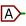

Referenz-Handbuch
Copyright
Dieses Dokument ist geschützt © 2010-2015 durch deren Beitragende welche nachfolgend aufgeführt sind. Sie können es nach den Bedingungen der GNU General Public License (https://www.gnu.org/licenses/gpl.html), Version 3 oder später, oder der Creative Commons Attribution License (https://creativecommons.org/licenses/by/3.0/), Version 3.0 oder später verteilen oder verändern.
Alle Markenrechtsnamen in diesem Guide gehören den rechtmäßigen Eigentümern.
Mitwirkende
Jean-Pierre Charras, Fabrizio Tappero.
Übersetzung
André S. <ansc.de@gmail.com> 2015, Carsten Schoenert <c.schoenert@t-online.de> 2016
Feedback
Bitte senden Sie alle Fehlermeldungen, Vorschläge oder neue Versionen an:
-
KiCad Dokumentation: https://github.com/KiCad/kicad-doc/issues
-
KiCad Software: https://bugs.launchpad.net/kicad
-
KiCad Software i18n Übersetzung: https://github.com/KiCad/kicad-i18n/issues
Datum der Veröffenlichung und Software-Version
Veröffentlicht am 30. Mai 2015.
1. Einleitung zu Eeschema
1.1. Beschreibung
Eeschema ist eine leistungsfähige Schaltplan-Eingabe-Software, die als Teil von KiCad vertrieben wird und für folgende Betriebssysteme verfügbar ist:
-
Linux
-
Apple OS X
-
Windows
Unabhängig vom Betriebssystem sind alle (mit Eeschema erstellten) Eeschema-Dateien 100% zwischen den Betriebssystemen austauschbar.
Eeschema ist eine integrierte Anwendung, in der alle Funktionen vom Zeichnen, Steuern, Layout, Bibliotheks-Management und Zugriff auf die Leiterplatten-Entwurfs-Software aus Eeschema selbst ausgeführt werden.
Eeschema wurde dafür ausgelegt mit PcbNew zusammenzuarbeiten, KiCads Leiterplatten-Entwurfs-Software. Es kann ebenfalls Netzlistendateien exportieren, welche alle elektrischen Verbindungen auflistet, zur Verwendung in anderen Programmen.
Eeschema enthält einen Bauteil-Symbol-Editor, welcher Bauteile erzeugen und bearbeiten kann und Bibliotheken verwaltet. Es enthält ebenfalls folgende zusätzliche essenzielle Funktionen, die für eine moderne Schaltplan-Eingabe-Software erforderlich sind:
-
Prüfung der elektrischen Vorgaben (Electrical Rules Check (ERC)) für die automatische Prüfung von falschen und fehlenden Verbindungen
-
Ausgabe von Druck-/Plot-Dateien in vielen Formaten (Postscript, PDF, HPGL und SVG)
-
Stücklistenerzeugung (BOM) (über Python-Skripte, was viele einstellbare Formate erlaubt).
1.2. Technischer Überblick
Eeschema ist nur durch den verfügbaren Speicher eingeschränkt. Daher gibt es keine tatsächliche Beschränkung der Bauteilanzahl, Bauteilpins, Verbindungen oder Arbeitsblätter. "Viel-Blatt-Schaltpläne" werden hierarchisch dargestellt.
Eeschema unterstützt diese Arten von "Viel-Blatt-Schaltplänen":
-
Einfache Hierarchie (jeder Schaltplan ist nur einmal verwendet).
-
Komplexe Hierarchie (manche Schaltpläne werden mehr als einmal verwendet in mehreren Instanzen).
-
Flache Hierarchie (Schaltpläne sind nicht explizit über den Hauptschaltplan verbunden).
2. Allgemeine Eeschema Befehle
2.1. Zugriff auf Eeschema Befehle
Sie können verschiedene Befehle erreichen über:
-
Klicken auf die Menüleiste (oben am Bildschirm).
-
Klicken auf die Symbole oben am Bildschirm (allgemeine Befehle).
-
Klicken auf die Symbole rechts am Bildschirm (spezielle Befehle oder "Werkzeuge").
-
Klicken auf die Symbole links am Bildschirm (Darstellungsoptionen).
-
Drücken der Maustasten (wichtige komplementäre Befehle). Insbesondere ein Rechtsklick öffnet ein Kontextmenü für das Element unter dem Cursor (Zoom, Raster und Bearbeitung des Elements).
-
Funktionstasten (F1, F2, F3, F2, Einfügen und Leertaste). Speziell: Die "Escape" Taste erlaubt häufig den Abbruch eines gerade gestarteten Befehls. Die "Einfügen" Taste erlaubt die Duplizierung des zuletzt eingefügten Elements.
Folgend ein Überblick auf die Oberfläche von Eeschema mit den verschieden Icons und der Menüleiste mit hinterlegten Befehlen:
2.2. Mausbefehle
2.2.1. Basisbefehle
Linke Taste
-
Einfacher Klick: Zeigt die Eigenschaften der Komponente oder des Textes unter dem Cursor in der Statuszeile an.
-
Doppelklick: Bearbeiten (wenn das Element bearbeitbar ist) der Kompenente oder des Textes.
Rechte Taste
-
Öffnet ein Pop-Up Menü.
2.2.2. Befehle auf Blöcke
Sie können in allen Eeschema-Menüs ausgewählte Bereiche bewegen, ziehen, kopieren und löschen.
Bereiche werden ausgewählt indem man einen Rahmen mit Hilfe der linken Maustaste um sie zieht.
Das Halten von "Umschalt", "Strg", oder "Umschalt + Strg" während der Auswahl führt jeweils Kopieren, Ziehen und Löschen aus:
Linke Maustaste |
Bewege Auswahl. |
Umschalt + linke Maustaste |
Kopiere Auswahl. |
Strg + linke Maustaste |
Ziehe Auswahl. |
Strg + Umschalt + linke Maustaste |
Lösche Auswahl. |
Während des Ziehens oder Kopierens können Sie:
-
Noch einmal klicken um das Element zu platzieren.
-
Die rechte Maustaste betätigen um abzubrechen.
Wenn ein Bewege-Block Befehl gestartet wurde, kann ein weiterer Befehl über das Pop-Up Menü (rechte Maustaste) ausgewählt werden:
2.3. Schnelltasten
-
Die "?" Taste zeigt die aktuelle die Liste der Tastaturbefehle an.
-
Tastaturbefehle werden über den Menüpunkt "Einstellungen" → "Einstellungen des Schaltplaneditors" im Reiter "Kontrollen" verwaltet.
Hier ist die Liste der Tastaturbefehle:
Alle Tastaturbefehle können vom Benutzer über den Editor für Tastaturbefehle neu belegt werden (Menüpunkt "Einstellungen" → "Einstellungen des Schaltplaneditors" im Reiter "Kontrollen"):
2.4. Auswahl der Rastergröße
In Eeschema bewegt sich der Cursor über ein Raster, welches angezeigt oder verborgen werden kann. Das Raster wird im Bibliotheksmanager immer angezeigt.
Sie können die Rastergröße über das Pop-Up Menü ändern oder über das Einstellungen/Einstellungen des Schaltplaneditors Menü.
Die Standard-Rastergröße ist 50 mil (0.050'') oder 1,27 Millimeter.
Das ist die bevorzugte Rastergröße um Bauteile und Leitungen in einem Schaltplan zu platzieren, und Bauteilanschlüsse wenn Sie ein Bauteilsymbol im Bauteileditor erstellen.
Sie können ebenfalls mit einem kleinerem Raster von 25 mil bis 10 mil arbeiten. Das ist aber nur dafür vorgesehen, um den Körper von Bauteilen zu erstellen oder um Text und Kommentare zu platzieren, nicht aber für die Platzierung von Anschlüssen und Leitungen.
2.5. Zoom Auswahl
Um den Zoomlevel zu verstellen:
-
Klicken sie die rechte Maustaste, um das Pop-Up Menü zu öffnen, und wählen Sie den gewünschten Zoom.
-
Oder benutzen Sie die Funktionstasten:
-
F1: Hineinzoomen
-
F2: Herauszoomen
-
F4 oder einfach mit der mittleren Maustaste klicken (ohne die Maus zu bewegen): Ansicht um die Cursorposition zentrieren
-
-
Fensterzoom:
-
Mausrad: Hinein-/Herauszoomen
-
Umschalt+Mausrad: Fensterinhalt nach oben/unten verschieben
-
Strg+Mausrad: Fensterinhalt nach links/rechts verschieben
-
2.6. Anzeigen von Cursorkoordinaten
Die Anzeigeeinheiten sind in Zoll oder Millimeter. Jedoch arbeitet Eeschema intern immer mit 0.001-Zoll (mil/thou) Einheiten.
Die folgende Information wird rechts unten im Fenster angezeigt:
-
Der Zoomfaktor
-
Die absolute Position des Cursors
-
Die relative Position des Cursors
Die relativen Koordinaten können mit der Leertaste zurückgesetzt werden. Das ist hilfreich, um Messungen zwischen zwei Punkten zu machen.
2.7. Obere Menüleiste
Die obere Menüleiste erlaubt das Öffnen und Speichern von Schaltplänen, Programmeinstellungen und das Betrachten der Dokumentation.
2.8. Symbole in der oberen Werkzeugleiste
Diese Werkzeugleiste erlaubt den Zugriff auf die Hauptfunktionen von Eeschema.
Wenn Eeschem im einzelstehenden Modus ausgeführt wird, ist dies die zur Verfügung stehende Werkzeugauswahl:

Wenn Eeschema aus dem Projekt-Manager (KiCad) ausgeführt wird, dann ist dies die zur Verfügung stehende Werkzeugauswahl:

Werkzeuge um ein Projekt neu aufzusetzen sind nicht verfügbar, weil sich diese Werkzeuge im Projekt-Manager befinden.
|
Erstelle einen neuen Schaltplan (nur im Einzelstehenden Modus). |
|
Öffne einen Schaltplan (nur im Einzelstehenden Modus). |
|
Kompletten Schaltplan speichern (hierarchisch). |
|
Blattgröße auswählen und Titelblock bearbeiten. |
|
Öffne Druckerdialog. |
|
Lösche die ausgewählten Elemente während einer Block-Bewegung. |
|
Kopiere ausgewählte Elemente in die Zwischenablage während einer Block-Bewegung. |
|
Kopiere das zuletzt ausgewählte Element oder Block in das aktuelle Blatt. |
|
Rückgängig: Widerrufe die letzte Änderung (bis zu 10 Schritte). |
|
Wiederholen (bis zu 10 Schritte). |
|
Rufe den Dialog, um Bauteile und Texte im Schaltplan zu suchen, auf. |
|
Rufe den Dialog, um Texte im Schaltplan zu suchen und zu ersetzen, auf. |
|
Hinein- und Herauszoomen. |
|
Bilschirm neu zeichnen; Zoom auf Zeichnung anpassen. |
|
Anzeigen und navigieren im Hierarchiebaum. |
|
Verlasse das aktuelle Blatt und gehe in der Hierarchie eins nach oben. |
|
Rufe den Bauteileditor Libedit auf um Bibliotheken und Bauteilsymbole zu betrachten und zu bearbeiten. |
|
Zeige Bibliotheken an (Bibliotheksbrowser). |
|
Beschrifte Bauteile. |
|
Elektrische Regel Prüfung (ERC), automatische Prüfung der elektrischen Verbindungen. |
|
Netzliste exportieren (Pcbnew, SPICE, und andere Formate). |
|
Stückliste erzeugen (BOM). |
|
Footprint bearbeiten. |
|
CvPcb aufrufen um Bauteilen Footprints zuzuweisen. |
|
Rufe Pcbnew auf, um ein Leiterplatten-Layout durchzuführen. |
|
Zurück-Import von Bauteil-Footprints (ausgewählt über CvPcb) in die "Footprint" Felder. |
2.9. Symbole in der rechten Werkzeugleiste
Diese Werkzeugleiste enthält Werkzeuge für das:
-
Platzieren von Bauteilen, Leitungen, Bussen, Verbindungen, Labels, Text, usw.
-
Erstellen hierarchischer Unterblätter und Verbindungssymbolen
|
|
Aktiven Befehl oder Werkzeug abbrechen. |
|
Hierarchische Navigation: Dieses Werkzeug ermöglichst es, das Unter-Blatt des angezeigten Schaltplans zu öffnen (Klick auf das Symbol dieses Unter-Blatts) oder eine Ebene nach oben in der Hierarchie zu gehen (Klick in einen freien Bereich des Schaltplans). |
|
|
Die Bauteilauswahl anzeigen. |
|
|
Die Versorgungssymbol Auswahl anzeigen. |
|
|
Eine Leitung zeichnen. |
|
|
Einen Bus zeichnen. |
|
|
Zeichne Leitung-zu-Bus Eingangspunkte. Diese Elemente sind nur grafisch und erstellen keine Verbindung, daher sollten sie nicht verwendet werden, um Leitungen miteinander zu verbinden. |
|
|
Zeichne Bus-zu-Bus Verbindungen. |
|
|
Platziere ein "keine Verbindung" Symbol. Diese werden an Bauteil- Anschlüsse platziert, die nicht verbunden werden sollen. Das ist nützlich für die ERC-Funktion (elektrische Prüfung) um prüfen zu können, ob die Anschlüsse absichtlich frei sind oder vergessen wurden. |
|
|
Eine Verbindung platzieren. Das verbindet zwei sich kreuzende Leitungen oder eine Leitung und einen Anschluss, wenn es mehrdeutig sein kann. (d.h. wenn das Ende einer Leitung oder Anschlusses nicht mit einem der Enden der anderen Leitung verbunden ist.) |
|
|
Platzieren eines lokalen Labels. Zwei Leitungen können mit identischem Label auf den gleichen Blatt verbunden werden. Für Verbindungen zwischen zwei unterschiedlichen Blättern müssen Sie globale oder hierarchische Label verwenden. |
|
 |
Platziere ein globales Label. Alle globalen Label mit dem gleichen Namen sind miteinander verbunden, auch auf unterschiedlichen Blättern. |
|
|
Platziere ein hierarchisches Label. Das ermöglicht es, eine Verbindung zwischen Blatt und seinem "Eltern-Blatt" zu erstellen. |
|
|
Platziere ein hierarchisches Unter-Blatt. Sie müssen einen Dateinamen für dieses Unter-Blatt angeben. |
|
|
Hierarchische Label von einem Unter-Blatt importieren. Diese Label müssen im Unter-Blatt bereits eingezeichnet sein. Sie sind gleichbedeutend mit Anschlüssen an einem Bauteil und müssen mit Leitungen verbunden werden. |
|
|
Platziere ein hierarchisches Label in einem Unter-Blatt-Symbol. Dieses wird nach Namen platziert und erfordert deshalb nicht, dass das Label bereits im Unter-Blatt eingezeichnet ist. |
|
|
Zeichne eine Linie. Diese sind rein grafisch und stellen keine Verbindung her. |
|
|
Platziere einen Textkommentar. Diese sind rein grafisch. |
|
|
Platziere ein Bitmap-Bild. |
|
|
Lösche das ausgewählte Element. Wenn mehrere überlagerte Elemente ausgewählt wurden, wird die Priorität auf das kleinste gegeben (in absteigender Priorität: Verbindung, "keine Verbindung", Leitung, Bus, Text, Bauteil). Das trifft auch auf hierarchische Blätter zu. Anmerkung: Die "Löschen Rückgängig" Funktion in der allgemeinen Werkzeugleiste erlaubt es Ihnen, die letzten Löschungen rückgängig zu machen. |

2.10. Symbole der linken Werkzeugleiste
Diese Werkzeugleiste verwaltet die Anzeigeoptionen:
|
Anzeigen/Ausblenden des Rasters. |
|
Auf Zoll umschalten. |
|
Auf Millimeter umschalten. |
|
Cursorform umschalten. |
|
Sichtbarkeit "unsichtbarer" Anschlüsse umschalten. |
|
Erlaubte Ausrichtung von Leitungen und Bussen umschalten. |
2.11. Pop-Up Menüs und Schnellbearbeitung
Ein Rechts-Klick öffnet ein Kontextmenü für das ausgewählte Element. Dieses enthält:
-
Zoomfaktor.
-
Rasteranpassung.
-
Häufig bearbeitete Parameter des ausgewählten Elements.
Pop-Up ohne ausgewähltes Element.
Bearbeiten eines Labels.
Bearbeiten eines Bauteils.
3. Hauptmenü
3.1. Dateimenü
Neues Schaltplan-Projekt |
Lösche den aktuellen Schaltplan und erstelle einen neuen (nur im eigenständigen Modus) |
Öffne Schaltplanprojekt |
Lade einen hierarchischen Schaltplan (nur im eigenständigen Modus) |
Zuletzt geöffnet |
Zeigt eine Liste der zuletzt geöffneten Dateien an (nur im eigenständigen Modus) |
Schaltplanseite einfügen |
Fügt den Inhalt einer anderen Schaltplanseite im aktuellen Blatt ein |
Schaltplanprojekt speichern |
Speichert das aktuelle Blatt und die gesamte Hierarchie |
Aktuellen Schaltplan speichern |
Speichert das aktuelle Blatt, aber keine weiteren der Hierarchie |
Seite speichern als… |
Speichert das aktuelle Blatt mit einem neuen Namen. |
Seite einrichten |
Seitenabmessungen und Titel-Block einstellen. |
Drucke den gesamten Schaltplan (Siehe auch Kapitel Plotten und Drucken). |
|
Plotten |
Export nach PDF, PostScript, HPGL oder SVG Format (Siehe Kapitel Plotten und Drucken). |
Abbrechen |
Schließen ohne speichern. |
3.2. Menüpunkt Einstellungen
3.2.1. Einstellungen
Bauteil Bibliotheken |
Wählen Sie Bibliotheken und den Bibliotheks-Suchpfad. |
Farbschema einstellen |
Wählen Sie die Farben für Anzeige, Drucken und Plotten. |
Einstellungen des Schaltplaneditors |
Allgemeine Einstellungen (Einheiten, Rastergröße, Feldnamen, usw.). |
Sprache |
Wählen Sie die Sprache der Benutzeroberfläche. |
Tastaturbefehle |
Auflisten, bearbeiten, exportieren und importieren von Einstellungen von Schnelltasten. |
Einstellungen speichern |
Speichert die Projekteinstellungen in eine .pro Datei. |
Einstellungen laden |
Lädt die Projekteinstellungen aus einer .pro Datei. |
3.2.2. Einstellungen / Bauteilbibliotheken
Dieser Dialog wird genutzt um die Bauteilbibliotheken und Suchpfade einzustellen. Die Einstellungen werden in der .pro Datei gespeichert. Es ist möglich, unterschiedliche Einstellungsdateien in unterschiedlichen Verzeichnissen zu haben.
Eeschema sucht in dieser Reihenfolge:
-
Die Konfigurationsdatei (projektname.pro) im aktuellen Verzeichnis. Die kicad.pro Konfigurationsdatei im KiCad-Verzeichnis. Diese Datei kann daher die Standardkonfiguration sein. Standardwerte wenn keine Datei gefunden wird. In diesem Fall ist es dann zumindest notwendig, die Liste der zu ladenden Bibliotheken auszufüllen und dann diese Konfiguration abzuspeichern.
Das Prüfe Zwischenspeicher-/Bibliotheks-Konflikte beim Schaltplan laden Kästchen wird genutzt, um das "Rettungsverhalten" bei Bibliotheks-Konflikten einzustellen. Siehe Zwischengespeicherte Bauteile retten für weitere Informationen dazu.
3.2.3. Menüpunkt Einstellungen → Einstellungen des Schaltplaneditors → Farbschema setzen
Farbschema für verschiedene Grafikelemente und Auswahl der Hintergrundfarbe (entweder schwarz oder weiß).
3.2.4. Menüpunkt Einstellungen → Einstellungen des Schaltplaneditors
Maßeinheiten: |
Wählen Sie die Anzeige- und Cursor-Koordinateneinheiten (Zoll oder Millimeter). |
Rastergröße: |
Auswahl der Rastergröße. Es wird empfohlen mit den normalen Raster zu arbeiten (0.050 Zoll oder 1,27 mm). Kleinere Raster werden für die Erstellung von Bauteilsymbolen verwendet. |
Standard-Bus-Dicke: |
Stiftgröße mit der Busse dargestellt werden. |
Standard Liniendicke: |
Stiftgröße mit der Objekte dargestellt werden, die keine spezielle Stiftgröße haben. |
Standard Textgröße: |
Textgröße, die for die Erstellung von neuen Texten und Labeln verwendet wird. |
Horizontaler Abstand wiederholter Elemente |
Erhöhung des Abstands auf der X-Achse während der Duplizierung von Schaltplanelementen (üblicher Wert 0) (nach der Platzierung eines Elements wie ein Bauteil, Label oder Leitung, wird eine Duplizierung mit der Einfg Taste durchgeführt) |
Vertikaler Abstand wiederholter Elemente |
Erhöhung des Abstands auf der Y-Achse während der Duplizierung von Elementen (üblicher Wert ist 0.100 Zoll oder 2,54 mm) |
Erhöhung wiederholter Label: |
Erhöhung des Label-Wertes während der Duplizierung von Texten, die auf eine Nummer enden, wie bei Bus-Mitgliedern (üblicher Wert 1 oder -1). |
Intervall für automatische Speicherung: |
Zeit in Minuten zwischen der Speicherung von Sicherungskopien. |
Gatter-ID Notation: |
Stil des Suffix', der benutzt wird, um Bauteil-Gatter zu kennzeichnen (U1A, U1.A, U1-1, usw.) |
Zeige Raster: |
Wenn aktiviert: zeige Raster an. |
Versteckte Pins anzeigen: |
Zeige unsichbare (oder versteckte) Anschlüsse an, typischerweise Spannungsanschlüsse. Wenn aktiviert, werden Spannungsanschlüsse angezeigt. |
Bei Zoom auf Cursor zentrieren: |
Wenn deaktiviert, bleiben Fenster- und Cursor-Position beim Zoomen wo sie sind. |
Mittlere Maustaste zum Verschieben nutzen: |
Wenn aktiviert kann das Blatt mit der mittleren Maustaste herumgeschoben werden. |
Begrenze das Bildschwenken auf die Größe der Scrollbalken |
Wenn aktiviert, kann mit der mittleren Maustaste der Blattbereich nicht aus dem Anzeigebereich herausgeschoben werden. |
Mitschwenken, während ein Objekt bewegt wird |
Wenn aktiviert, wird der Fensterausschnitt automatisch bewegt, wenn der Cursor das Fenster während des Zeichnens oder Bewegens verlässt. |
Busse und Leitungen auf H und V Ausrichtung begrenzen: |
Wenn aktiviert, können Busse und Leitungen nur horizontal und vertikal gezeichnet werden. Ansonsten können Busse und Leitungen in jeder Ausrichtung gezeichnet werden. |
Zeige Blattbegrenzung |
Wenn aktiviert, werden die Blattränder auf dem Bildschirm angezeigt. |
3.2.5. Menüpunkt Einstellungen → Sprache
Benutzen Sie "Voreinstellung". Andere Sprachen sind hauptsächlich für Entwicklungszwecke vorgesehen.
3.3. Menüpunkt Hilfe
Zugriff auf die Online-Hilfe (dieses Dokument) für ein ausführliches Tutorial zu KiCad. Benutzen Sie "Versionsbezeichnung kopieren" wenn Sie Fehlerberichte erstellen, um Ihre Programmversion und Betriebssystem zu identifizieren.
4. Obere Werkzeugleiste
4.1. Einrichten des Zeichenblattes
Das Blatteinstellungen-Symbol
 ermöglicht es Ihnen, die Blattgröße und den Inhalt des Titel-Blocks
festzulegen.
ermöglicht es Ihnen, die Blattgröße und den Inhalt des Titel-Blocks
festzulegen.
Die Blattnummerierung wird automatisch aktualisiert. Sie können das Datum auf Heute setzen, indem Sie auf den linken Pfeil Button bei "Datum festlegen" drücken, aber es wird nicht automatisch geändert.
4.2. Optionen des Schaltplaneditors
4.2.1. Allgemeine Optionen
4.2.2. Feldnamen für Templates
Sie können eigene Felder festlegen, die standardmäßig in jedem Bauteil vorhanden sein werden (auch wenn sie leer bleiben).
4.3. Suchwerkzeug
Das Suche-Symbol
 kann verwendet
werden, um das Suchwerkzeug aufzurufen.
kann verwendet
werden, um das Suchwerkzeug aufzurufen.
Sie können nach einer Referenz, einem Wert oder einer Zeichenfolge im aktuellen Blatt oder in der gesamten Hierarchie suchen. Wenn etwas gefunden wurde, wird der Cursor auf dem gefundenen Element im entsprechenden Unter-Blatt platziert.
4.4. Netzlisten Werkzeug
Das Netzlisten-Symbol
 öffnet
das Netzlisten-Erzeugungs-Werkzeug.
öffnet
das Netzlisten-Erzeugungs-Werkzeug.
Die erzeugte Netzliste beschreibt alle Verbindungen in der gesamten Hierarchie.
In einer "Mehr-Blatt-Hierarchie" ist jedes lokale Label nur innerhalb des Blattes sichtbar, zu dem es gehört. Daher ist das Label TOTO auf Blatt 3 ein anderes als das Label TOTO auf Blatt 5 (wenn nicht absichtlich eine Verbindung eingefügt wurde, um die beiden zu verbinden). Das kommt daher, dass der Blattname intern mit dem lokalen Namen verbunden ist.
Anmerkung 1:
Die Länge von Labels ist in Eeschema nicht begrenzt, aber ein Programm, das die erzeugte Netzliste weiterverarbeitet, könnte an dieser Stelle eingeschränkt sein.
Anmerkung 2:
Vermeiden Sie Leerzeichen in den Labels, denn sie werden als separate Wörter erscheinen. Das ist keine Einschränkung von Eeschema, aber von vielen Netzlistenformaten, die häufig annehmen, das Label keine Leerzeichen enthalten.

Optionen:
Standard-Format:
Aktivieren Sie dies, um Pcbnew als das Standardformat auszuwählen.
Andere Formate können ebenfalls erzeugt werden:
-
Orcad PCB2
-
CadStar
-
Spice, für Simulatoren
Externe Plugins können gestartet werden, um die Netzlistenformate zu erweitern (ein PadsPcb-Plugin wurde hier hinzugefügt).
4.5. Das Annotation (Beschriftungs) Werkzeug
Das Symbol
 ruft das
Beschriftungswerkzeug auf. Dieses Werkzeug führt eine automatische Benennung
aller Bauteile im Schaltplan durch.
ruft das
Beschriftungswerkzeug auf. Dieses Werkzeug führt eine automatische Benennung
aller Bauteile im Schaltplan durch.
Für mehrteilige Bauteile (wie ein 7400 TTL, welches 4 Gatter enthält), wird ein Mehr-Teil-Suffix erzeugt (daher wird ein 7400 TTL mit dem Bezeichner U3 aufgeteilt in U3A, U3B, U3C und U3D).
Sie können bedingungslos alle Bauteile beschriften oder nur neue Bauteile, das heißt diese, die bisher nicht beschriftet wurden.
Anwendungsbereich
Auf alle Schaltpläne anwenden. Alle Blätter werden neu beschriftet (übliche Einstellung).
Nur auf den gegenwärtigen Schaltplan anwenden. Nur die aktuelle Schaltplanseite wird neu beschriftet (Diese Option sollte nur in speziellen Fällen verwendet werden, zum Beispiel um die Anzahl der Widerstände auf der aktuellen Seite zu bestimmen.).
Bestehende Annotation beibehalten. Bedingte Beschriftung, nur die neuen Bauteile werden neu beschriftet (übliche Einstellung).
Bestehende Annotationen ersetzen. Unbedingte Beschriftung, alle Bauteile werden neu beschriftet (diese Option sollte verwendet werden, wenn es doppelte Referenzen gibt).
Zurücksetzen, aber keine beschrifteten mehrteiligen Bauteile ändern. Das behält alle Gruppen von mehrteiligen Bauteilen (d.h. U2A, U2B…) bei neuer Beschriftung bei.
Reihenfolge der Annotation
Wählt die Reihenfolge aus, in der die Bauteile beschriftet werden.
Annotationsauswahl
Setzt die Methode, mit der die Nummerierung ausgewählt wird.
4.6. ERC Werkzeug
Das Symbol
 ruft das ERC (Electrical
Rule Check -→ "Elektrische-Regel-Prüfung-") Werkzeug auf.
ruft das ERC (Electrical
Rule Check -→ "Elektrische-Regel-Prüfung-") Werkzeug auf.
Dieses Werkzeug führt eine Prüfung des Schaltplanentwurfs durch und ist besonders hilfreich, um vergessene Verbindungen und Inkonsistenzen herauszufinden.
Sobald Sie den ERC durchlaufen lassen haben, platziert Eeschema Markierungen, um die Probleme hervorzuheben. Die Diagnose kann dann mit einem Links-Klick auf die Markierung ausgegeben werden. Eine Fehlerdatei kann ebenfalls erzeugt werden.
4.6.1. ERC Bericht
Fehler werden in der ERC Dialog-Box angezeigt:
-
Komplette Zahl der Fehler und Warnungen.
-
Fehleranzahl.
-
Warnungsanzahl.
Optionen:
-
ERC-Protokolldatei erstellen: aktivieren Sie diese Option um eine ERC-Protokolldatei zu erstellen.
Befehle:
-
Markierungen entfernen: entfernt alle ERC Fehler-/Warnungs-Markierungen
-
Starte: um den ERC durchzuführen.
-
Abbrechen: Diesen Dialog schließen.
Anmerkung:
-
Klicken auf eine Fehlermeldung springt zur zugehörigen Markierung im Schaltplan.
4.6.2. ERC Optionen Dialog
Dieser Tab erlaubt es Ihnen Verbindungsregeln zwischen Pins festzulegen; Sie können zwischen 3 Möglichkeiten für jeden Fall wählen:
-
Kein Fehler
-
Warnung
-
Fehler
Jedes Kästchen der Matrix kann durch darauf klicken verändert werden.
4.7. Stücklistenwerkzeug
Das Symbol
 ruft den Stücklisten
(BOM)-Generator auf. Dieses Menü erlaubt es eine Datei zu erzeugen, die alle
Bauteile und/oder hierarchische Verbindungen auflistet.
ruft den Stücklisten
(BOM)-Generator auf. Dieses Menü erlaubt es eine Datei zu erzeugen, die alle
Bauteile und/oder hierarchische Verbindungen auflistet.
Eeschemas Stücklisten-Generator nutzt externe Plugins, üblicherweise in XSLT- oder Python-Format. Manche werden mitgeliefert und werden im KiCad Programm-Verzeichnis installiert.
Ein hilfreicher Satz von Bauteileigenschaften, die in einer Stückliste (BOM) verwendet werden können:
-
Wert: eindeutiger Name für jedes verwendete Bateil
-
Footprint - entweder manuell gesetzt oder "zurück-annotiert" (siehe unten).
-
Feld1 - Name des Herstellers
-
Feld2 - Teilenummer des Herstellers
-
Feld3 - Teilenummer des Distributors
Zum Beispiel:
4.8. Import Werkzeug für Footprint-Zuweisung:
4.8.1. Zugriff:
Das Symbol
 ruft das "Zurück-Annotations"-Werkzeug auf.
ruft das "Zurück-Annotations"-Werkzeug auf.
Dieses Werzeugt erlaubt es, Footprint-Änderungen die in PcbNew gemacht wurden, zurück in die Footprint-Felder in Eeschema zu importieren.
5. Erstellung und Bearbeitung eines Schaltplans
5.1. Einleitung
Ein Schaltplan kann über ein einzelnes Blatt dargestellt werden, aber wenn er groß genug ist, wird er mehrere Blätter benötigen.
Ein Schaltplan der auf mehreren Seiten erstellt wird, ist hierarchisch und alle seine Blätter (jedes ist eine eigene Datei) stellen ein Eeschema-Projekt dar. Die Bearbeitung von hierarchischen Schaltplänen wird im Kapitel Hierarchische Schaltpläne beschrieben.
5.2. Allgemeine Betrachtungen
Ein Schaltplan, der mit Eeschema erstellt wird, ist mehr als eine einfache grafische Darstellung eines elektronischen Schaltkreises. Er ist normalerweise der Startpunkt einer Entwicklungskette, die es erlaubt:
-
gegen einen Regelsatz zu prüfen (Elektrischer-Regel-Prüfung (ERC)), um Fehler und Auslassungen zu erkennen.
-
automatisch eine Stückliste (BOM) zu erstellen.
-
eine Netzliste zu erzeugen; für Simulations-Software wie zum Beispiel SPICE.
-
eine Netzliste zu erzeugen; für die Übertragung zum Leiterplatten-Layout.
Ein Schaltplan besteht hauptsächlich aus Bauteilen, Leitungen, Labeln, Verbindungen, Bussen und Leistungsanschlüssen. Für Klarstellungen im Schaltplan können Sie rein grafische Elemente wie Bus-Eingänge, Kommentare und Poly-Linien hinzufügen.
5.3. Die Entwicklungskette
Bauteile werden dem Schaltplan aus Bauteil-Bibliotheken hinzugefügt. Nachdem der Schaltplan erstellt wurde, wird eine Netzliste erzeugt, welche später genutzt wird, um die festgelegten Verbindungen und Footprints in PcbNew zu importieren.
5.4. Bauteilplatzierung und Bearbeitung
5.4.1. Suchen und Platzieren eines Bauteils
Um ein Bauteil in Ihren Schaltplan zu laden, können Sie das Symbol
 benutzen. Ein
Dialogfenster erlaubt es Ihnen, den Namen des zu ladenden Bauteils
einzugeben.
benutzen. Ein
Dialogfenster erlaubt es Ihnen, den Namen des zu ladenden Bauteils
einzugeben.
Der Bauteil-Auswahl-Dialog wird Bauteile nach ihrem Namen, Schlüsselwörtern und Beschreibung filtern, entsprechend Ihrer Eingabe im Suchfeld.
Bevor Sie das Bauteil im Schaltplan platzieren, können Sie es drehen, spiegeln und seine Felder bearbeiten; entweder über die Schnelltasten oder das Rechtsklick-Kontext-Menü. Das kann in gleicher Weise auch nach dem Platzieren gemacht werden.
Hier ist ein Bauteil während der Platzierung:
5.4.2. Leistungsanschlüsse
Ein Leistungsanschluss-Symbol ist ein Bauteile (die Symbole sind in der
"power" Bibliothek gruppiert), so dass sie über die Bauteilauswahl
platzierbar sind. Da Leistungs-Platzierungen häufig benötigt werden, gibt es
das
 Werkzeug. Dieses
Werkzeug ist ähnlich, außer dass die Suche direkt in der "power"-Bibliothek
durchgeführt wird.
Werkzeug. Dieses
Werkzeug ist ähnlich, außer dass die Suche direkt in der "power"-Bibliothek
durchgeführt wird.
5.4.3. Bauteilbearbeitung und -änderung (schon platziertes Bauteil)
Es gibt zwei Wege ein Bauteil zu bearbeiten:
-
Änderung des Bauteils selbst: Position, Ausrichtung, Gatter-Auswahl bei einem Mehr-Gatter-Bauteil (z.B. Logik-Baustein).
-
Änderung eines der Felder im Bauteil: Referenz, Wert, Footprint, usw.
Wenn ein Bauteil gerade platziert wurde, kann es sein, dass Sie seinen Wert ändern müssen (speziell bei Widerständen, Kondensatoren, usw.), aber es ist nutzlos ihm sofort eine Referenz zuzuweisen oder das Gatter auszuwählen (außer für Bauteile mit verriegelten Gattern, die Sie manuell zuweisen müssen). Das kann automatisch über die Annotations-Funktion durchgeführt werden.
Bauteil-Änderung
Im eine Funktion des Bauteils zu ändern, positionieren Sie den Cursor über dem Bauteil und dann entweder:
-
einen Doppelklick auf das Bauteil um den vollen Bearbeitungsdialog zu öffnen.
-
Rechtsklick um das Kontextmenü zu öffnen und einen der Befehle: Bewegen, Ausrichtung, Bearbeiten, Löschen, usw. auswählen.
Textfelder ändern
Sie können Referenz, Wert, Position, Ausrichtung, Textgröße und Sichtbarkeit folgender Felder ändern:
-
Doppelklick auf das Textfeld, um es zu ändern.
-
Rechtsklick um das Kontextmenü zu öffnen und einen der Befehle benutzen: Bewegen, Drehen, Bearbeiten, Löschen, usw.
Für weitere Optionen, oder um Felder zu erstellen, doppelklicken Sie auf das Bauteil om den Bauteil-Eigenschaften-Dialog zu öffnen.
Jedes Feld kann sichtbar oder ausgeblendet sein und horizontal oder vertikal angezeigt werden. Die angezeigte Position wird für ein normal angezeigtes Bauteil immer dargestellt (ohne Drehung und Spiegelung) und ist relativ zum Ankerpunkt des Bauteils.
Die Option "Voreinstellungen wiederherstellen" setzt das Bauteil auf die Original-Ausrichtung und setzt die Optionen, Größe und Position jedes Feldes zurück. Textfelder werden jedoch nicht geändert, weil das den Schaltplan zerstören könnte.
5.5. Leitungen, Busse, Label, Leistungsanschlüsse
5.5.1. Einleitung
All diese Zeichnungselemente können ebenfalls mit den Werkzeugen der vertikalen rechten Werkzeugleiste platziert werden.
Diese Elemente sind:
-
Leitungen: die meisten Verbindungen zwischen Bauteilen.
-
Busse: um Bus-Label grafisch zu verbinden
-
Poly-Linien: für grafische Darstellung.
-
Verbindungen: um Verbindungen zwischen gekreuzten Leitungen oder Bussen herzustellen.
-
Bus-Eingänge: um Verbindungen zwischen Leitungen und Bussen darzustellen. Rein grafisch!
-
Label: um Leitungen zu benennen oder Verbindungen herzustellen.
-
Globale Label: für Verbindungen zwischen Blättern.
-
Texte: für Kommentare und Anmerkungen.
-
"Keine Verbindung" Kennzeichnung: um einen Anschluss abzuschließen, der keine Verbindung braucht.
-
Hierarchische Blätter, und ihre Verbindungsanschlüsse.
5.5.2. Verbindungen (Leitungen und Label)
Es gibt zwei Möglichkeiten eine Verbindung zu erstellen:
-
Pin zu Pin Leitungen.
-
Label.
Das folgende Bild zeigt die beiden Methoden:
Anmerkung 1:
Der "Anschluss"-Punkt eines Labels ist die untere linke Ecke des ersten Buchstaben des Labels. Dieser Punkt wird mit einem kleinen Quadrat dargestellt, wenn er nicht verbunden ist.
Dieser Punkt muss daher Kontakt zur Leitung haben oder am Ende eines Anschlusses überlagert werden, sodass das Label als verbunden angesehen wird.
Anmerkung 2:
Um eine Verbindung herzustellen, muss ein Teil der Leitung mit seinen Enden an ein anderes Segement oder einen Pin angeschlossen sein.
Wenn es eine Überlappung gibt (wenn eine Leitung über einen Anschluss läuft aber nicht zum Anschluss verbunden wird), gibt es keine Verbindung.
Anmerkung 3:
Leitungen die sich kreuzen sind nicht implizit verbunden. Es ist notwendig, sie mit einem Verbindungspunkt zu verbinden, wenn eine Verbindung gewünscht ist.
Das vorstehende Bild (Leitungen verbunden mit DB25FEMALE Pins 22, 21, 20, 19 ) zeigt so einen Fall einer Verbindung mit einem Verbindungspunkt.
Anmerkung 4:
Wenn zwei unterschiedliche Labels an der gleichen Leitung platziert werden, werden sie verbunden und werden äquivalent: alle anderen Elemente die mit einem der beiden Label verbunden sind, sind mit allen verbunden.
5.5.3. Verbindungen (Busse)
Im folgenden Schaltplan sind viele Anschlüsse zu Bussen verbunden.

Bus-Mitglieder
Aus Sicht des Schaltplans ist ein Bus eine Ansammlung von Signalen, die mit einem gemeinsamen Prefix starten und auf eine Nummer enden. Zum Beispiel PCA0, PCA1 und PCA2 sind Mitglieder des PCA Bus.
Der komplette Bus ist benannt PCA[N..m], wobei N und m die ersten und letzten Leitungs-Nummern dieses Busses sind. Wenn PCA also 20 Mitglieder von 0 bis 19 hat, wird der gesamte Bus mit PCA[0..19] bezeichnet. Eine Sammlung wie PCA0, PCA1, WRITE, READ kann nicht in einem Bus zusammengefasst werden.
Verbindungen zwischen Bus-Mitgliedern
Anschlüsse zwischen den gleichen Mitgliedern eines Busses müssen über Label verbunden werden. Es ist nicht möglich einen Anschluss direkt an einen Bus zu verbinden; diese Art der Verbindung wird von Eeschema ignoriert.
Im Beispiel oben sind Verbindungen über Label hergestellt, die an Leitungen platziert wurden, die an Pins angeschlossen sind. Bus-Eingänge (Leitungs-Segmente mit 45 Grad) zu Bussen sind rein grafisch und nicht notwendig um logische Verbindungen herzustellen.
Tatsächlich können über den Wiedeholungsbefehl (Insert Taste) Verbindungen sehr schnell in folgender Weise hergestellt werden, wenn die Bauteilanschlüsse in aufsteigender Reihenfolge angeordnet sind (ein üblicher Fall in der Praxis bei Bauteilen wie Speichern, Mikroprozessoren…):
-
Plazieren Sie das erste Label (zum Beispiel PCA0)
-
Nutzen Sie den Wiederholungsbefehl so oft wie nötig um die Mitglieder zu platzieren. Eeschema wird automatisch die nächsten Label erzeugen (PCA1, PCA2,…) senkrecht angeordnet, theoretisch an der Position der anderen Anschlüsse.
-
Zeichnen Sie die Leitung unter dem ersten Label. Dann nutzen Sie den Wiederholungsbefehl um die anderen Leitungen unter den Labeln zu platzieren.
-
Wenn nötig platzieren sie die Bus-Eingänge in der gleichen Weise (ersten Eingang platzieren, dann den Wiederholungsbefehl nutzen).
|
Anmerkung
|
Im Einstellungen/Einstellungen des Schaltplaneditors Menü können Sie die Wiederholungs-Parameter einstellen:
|
Globale Verbindung zwischen Bussen
Es kann sein, dass Sie Verbindungen zwischen Bussen brauchen, um zwei Busse mit unterschiedlichen Namen, oder im Falle einer Hierarchie, um zwei unterschiedliche Blätter zu verbinden. Diese Verbindungen können Sie in folgender Weise erstellen.

Die Busse PCA[0..15], ADR[0..7] und BUS[5..10] sind miteinander verbunden (beachten Sie den Verbindungspunkt hier, weil die vertikale Bus-Leitung das mittlere und horizontale Bus-Segment verbindet)
Präziser, die jeweiligen Mitglieder sind miteinander verbunden: PCA0, ADR0 sind verbunden (das Gleiche wie PCA1 und ADR1 … PCA1 und ADR7).
Weiterhin sind PCA5, BUS5 und ADR5 verbunden (genau wie PCA6, BUS6 und ADR6 und wie PCA7, BUS7 und ADR7).
PCA8 und BUS8 sind ebenfalls verbunden (genau wie PCA9 und BUS9, PCA10 und BUS10).
5.5.4. Verbindungen von Spannungsversorgungen
Wenn die Leistungsanschlusspins(Spannungsanschlusspins) von Bauteilen sichtbar sind, müssen sie verbunden werden, wie jedes andere Signal auch.
Bauteile wie Gatter und Flip-Flops könnten ausgeblendete Spannungsanschlüsse haben. Auf diese muss speziell geachtet werden weil:
-
Sie können keine Leitungen anschließen, weil sie nicht sichtbar sind.
-
Sie kennen nicht die Namen der Anschlüsse.
Zusätzlich wäre es eine schlechte Idee sie sichtbar zu machen und sie wie andere Pins anzuschließen, weil der Schaltplan unlesbar würde und nicht mit den üblichen Konventionen überein stimmen würde.
|
Anmerkung
|
Wenn Sie die Anzeige der nicht sichtbaren Anschlüsse erzwingen wollen,
müssen Sie die Option "Versteckte Pins einblenden" im Hauptmenü in den
"Einstellungen des Schaltplaneditors" einschalten oder über das Symbol
|
Eeschema verbindet automatisch ausgeblendete Spannungsanschlüsse mit gleichem Namen zu einem Spannungsnetz mit diesem Namen. Es mag nötig sein Spannungsnetze mit unterschiedlichen Namen zu verbinden (zum Beispiel "GND" in TTL Bauteilen und "VSS" in MOS Bauteilen); benutzen Sie Leistungsanschlüsse dafür.
Es wird nicht empfohlen Label für die Verbindung von Spannungsnetzen zu benutzen. Diese haben nur einen lokalen Verbindungsfokus und würden ausgeblendete Spannungsanschlüsse nicht verbinden.
Das Bild unten zeigt ein Beispiel für Leistungsanschluss-Verbindungen.

In diesem Beispiel ist Masse (GND) mit dem Spannungsanschluss VSS verbunden, und Spannungsanschluss VCC ist verbunden mit VDD.
Zwei PWR_FLAG Symbole sind hier zu sehen. Sie zeigen an, dass die zwei Spannungsanschlüsse VCC und GND tatsächlich mit einer Spannungsquelle verbunden sind. Ohne diese beiden Symbole würde das ERC-Werkzeug folgendes erkennen: Warning: power port not powered.
Alle diese Symbole sind Bauteile in der Schaltplan-Bibliothek „power“.
5.5.5. "Keine Verbindung" Markierung
Diese Symbole sind sehr nützlich um unerwünschte ERC-Warnungen zu vermeiden. Die "elektrische Regel Prüfung" stellt sicher, dass keine Verbindung ungewollt offen bleibt.
Wenn Anschlüsse wirklich unverbunden bleiben müssen, ist es notwendig ein
"Keine Verbindung" Symbol an diesen Anschlüssen zu platzieren (Werkzeug
 ). Diese Symbole haben
keinen Einfluss auf die erzeugte Netzliste.
). Diese Symbole haben
keinen Einfluss auf die erzeugte Netzliste.
5.6. Zeichnungsergänzungen
5.6.1. Textkommentare
Es kann nützlich sein (um das Verständnis des Schaltplans zu fördern)
Anmerkungen wie Textfelder oder Rahmen hinzuzufügen. Textfelder (Werkzeug
 ) und Poly-Linien (Werkzeug
) und Poly-Linien (Werkzeug
 ) sind für diesen Zweck vorgesehen,
im Gegensatz zu Labeln und Leitungen, welche Verbindungselemente sind.
) sind für diesen Zweck vorgesehen,
im Gegensatz zu Labeln und Leitungen, welche Verbindungselemente sind.
Hier finden sie ein Beispiel für einen Rahmen mit einem Textkommentar.

5.6.2. Seite einrichten -Titelblock
Der Titelblock wird über das Werkzeug
 bearbeitet.
bearbeitet.
Die Schaltplannummer (Blatt X/Y) wird automatisch aktualisiert.
5.7. Zwischengespeicherte Bauteile sichern
Standardmäßig lädt Eeschema Bauteilsymbole aus den Bibliotheken entsprechend der eingestellten Pfade. Das kann Probleme verursachen, wenn man ein sehr altes Projekt lädt: wenn sich die Symbole in der Bibliothek geändet haben, seit sie im Projekt verwendet wurden, würden die im Projekt automatisch mit neuen Versionen ersetzt werden. Die neue Version mag aber sich nicht korrekt anordnen oder anders ausgerichtet sein, was zu einem kaputten Schaltplan führt.
Wenn ein Projekt gespeichert wird, wird gleichzeitig eine Zwischenspeicher-Bibliothek mit abgespeichert. Das erlaubt es, das Projekt zu verteilen ohne die kompletten Bibliotheken. Wenn Sie ein Projekt laden, wo Symbole im Zwischenspeicher und in den System-Bibliotheken vorhanden sind, wird Eeschema die Bibliotheken nach Konflikten durchsuchen. Jegliche Konflikte werden in folgendem Dialog dargestellt:

In diesem Beispiel können Sie sehen, dass das Projekt ursprünglich eine Diode verwendet hat, mit der Kathode nach oben, aber die Bibliothek enthält jetzt eine mit der Kathode nach unten. Diese Änderung könnte das Projekt zerstören! OK zu wählen, wird hier das alte Symbol in eine spezielle „Rettungs“-Bibliothek sichern und alle Bauteile, die dieses Symbol verwenden, umbenennen, um Namens-Konflikte zu vermeiden.
Wenn Sie Abbrechen wählen, wird keine Rettung durchgeführt, Eeschema wird standardmäßig alle neuen Bauteile laden. Weil keine Änderungen gemacht wurden, können Sie immer noch zurück gehen und die Rettungsfunktion neu starten: wählen Sie "Rette zwischengespeicherte Bauteile" im Werkzeugmenü um den Dialog noch einmal aufzurufen.
Wenn Sie es bevorzugen diesen Dialog nicht zu sehen, können Sie "Nicht noch einmal zeigen" drücken. Der Standard wird dann sein, nichts zu tun und neue Bauteile zu laden. Diese Einstellung kann zurück geändert werden in den Bauteil-Bibliotheks-Einstellungen.
6. Hierarchische Schaltpläne
6.1. Einleitung
Eine hierarchische Darstellung ist im Allgemeinen eine gute Lösung für Projekt die größer als ein paar Arbeitsblätter sind. Wenn Sie diese Art von Projekt verwalten wollen, ist es nötig:
-
Große Arbeitsblätter zu verwenden, was in Problemen beim Ausdrucken und Handhaben endet.
-
mehrere Blätter zu verwenden, was Sie zu einer hierarchischen Struktur hinführt.
Der komplette Schaltplan besteht dann aus einem Haupt-Schaltplan-Blatt, auch genannt Hauptblatt, und Unter-Blättern, die die Hierarchie darstellen. Zudem erhöht ein geschicktes Unterteilen des Entwurfs in separate Blätter oft die Lesbarkeit.
Vom Hauptblatt müssen Sie in der Lage sein alle Unter-Blätter zu
erreichen. Hierarchische Schaltplan-Verwaltung ist in Eeschema sehr einfach,
dank des integrierten "Hierarchie-Navigators", erreichbar über das Symbol
 in der oberen
Werkzeugleiste.
in der oberen
Werkzeugleiste.
Es gibt zwei Arten von Hierarchie, die gleichzeitig auftreten können: die Erste wurde gerade eingeführt und wird allgemein genutzt. Die zweite besteht darin, Bauteile in der Bibliothek zu erstellen, die wie normale Bauteile im Schaltplan aussehen, aber die sich tatsächlich zu einem Schaltplan verbinden, der ihre interne Struktur beschreibt.
Diese zweite Art wird verwendet, um integrierte Schaltungen zu entwickeln, weil Sie in diesem Fall Funktionsbibliotheken in dem zu zeichnenden Schaltplan nutzen müssen.
Eeschema unterstützt derzeit nicht diesen zweiten Fall.
Eine Hierarchie kann sein:
-
Einfach: Ein gegebenes Blatt wird nur einmal verwendet.
-
Komplex: Ein gegebenes Blatt wird mehr als einmal verwendet (mehrfache Instanzen).
-
Flach: Das ist eine einfache Hierarchie, aber es werden keine Verbindungen zwischen Blättern gezeichnet.
Eeschema kann mit all diesen Hierarchien umgehen.
Das Erstellen eines hierarchischen Schaltplans ist einfach, die komplette Hierarchie wird vom Hauptschaltplan aus gehandhabt, als hätten Sie nur einen Schaltplan.
Die zwei wichtigen zu verstehenden Punkte sind:
-
Wie wird ein Unter-Blatt erstellt.
-
Wie werden elektrische Verbindungen zwischen Unter-Blättern hergestellt.
6.2. Bewegen in der Hierarchie
Das Wechseln zwischen Unter-Blättern ist sehr einfach, dank des
Navigator-Werkzeugs, das über das Symbol
 in der oberen
Werkzeugleiste erreichbar ist.
in der oberen
Werkzeugleiste erreichbar ist.
Jedes Blatt ist über einen Klick auf seinen Namen erreichbar. Für schnellen Zugriff machen Sie einen Doppelklick auf den Blatt-Namen.
Den Hauptschaltplan oder ein Unter-Blatt können Sie schnell erreichen, dank
des Werkzeugs
 in der
rechten Werkzeugleiste. Wenn das Navigations-Werkzeug ausgewählt wurde:
in der
rechten Werkzeugleiste. Wenn das Navigations-Werkzeug ausgewählt wurde:
-
Klicken Sie auf den Blattnamen um das Blatt auszuwählen.
-
Klicken Sie irgendwohin um das Hauptblatt auszuwählen.
6.3. Lokale, hierarchische und globale Label
6.3.1. Eigenschaften
Lokale Label (Werkzeug
 ) verbinden
Signale nur innerhalb eines Blattes. Hierarchische Label (Werkzeug
) verbinden
Signale nur innerhalb eines Blattes. Hierarchische Label (Werkzeug
 )
verbinden Signale nur innerhalb eines Blattes und zu einem hierarchischen
Anschluss im übergeordneten Blatt.
)
verbinden Signale nur innerhalb eines Blattes und zu einem hierarchischen
Anschluss im übergeordneten Blatt.
Globale Label (Werkzeug ) verbinden Signale über alle Hierarchieebenen. Unsichtbare Spannungsversorgungsanschlüsse (Typ Spannungseingang und Spannungsausgang) sind wie globale Label, weil sie über die gesamte Hierarchie als verbunden behandelt werden.
|
Anmerkung
|
Innerhalb einer Hierarchie (einfach oder komplex) können Sie sowohl hierarchische als auch globale Label verwenden. |
6.4. Erstellung von Hierarchieeinträgen
Sie müssen:
-
Platzieren sie im Hauptblatt ein Hierarchiesymbol "Blattsymbol".
-
Öffnen Sie den neuen Schaltplan (Unter-Blatt) mit dem Navigator und zeichnen Sie ihn, wie jeden anderen Schaltplan.
-
Zeichnen Sie die elektrischen Verbindungen zwischen den beiden Schaltplänen indem Sie globale Label (HLabel) im neuen Schaltplan(Unter-Blatt) platzieren und Label mit dem selben Namen im Hauptblatt, auch bekannt als Blattlabel (Sheetlabels). Diese Blattlabel werden mit dem Blattsymbol des Hauptblattes zu den anderen Elementen des Schaltplans wie Standard-Bauteil-Anschlüsse verbunden.
6.5. Blattsymbol
Zeichnen Sie ein Rechteck, definiert über zwei diagonale Punkte, welches das Unter-Blatt symbolisiert.
Die Größe dieses Rechtecks muss es Ihnen erlauben, später verschiedene Label (Hierarchie-Anschlüsse) zu platzieren, die mit den globalen Label (HLabels) des Unter-Blatts korrespondieren.
Diese Label sind ähnlich zu üblichen Bauteil-Anschlüssen. Wählen Sie das
Werkzeug
 .
.
Klicken sie um die obere linke Ecke des Rechtecks zu platzieren. Klicken sie noch einmal um die linke untere Ecke zu platzieren, achten Sie auf ein ausreichend großes Rechteck.
Sie werden dann aufgefordert einen Dateinamen einzugeben und einen Blattnamen für dieses Unter-Blatt (um den entsprechenden Schaltplan über den Hierarchie-Navigator zu öffnen).
Sie müssen zumindest den Dateinamen eingeben. Wenn es keinen Blattnamen gibt, wird der Dateiname als Blattname verwendet (der übliche Weg).
6.6. Verbindungen - Hierarchische Verbinder
Hier erstellen Sie Verbindungspunkte (hierarchische Anschlüsse) für das Symbol, das gerade erzeugt wurde.
Diese Verbindungspunkte sind ähnlich normalen Bauteilanschlüssen, jedoch mit der Möglichkeit, einen kompletten Bus mit nur einem Verbindungspunkt anzuschließen.
Es gibt zwei Wege das zu tun:
-
Platzieren Sie die unterschiedlichen Anschlüsse bevor Sie das Unter-Blatt zeichnen (manuelle Platzierung).
-
Platzieren Sie die unterschiedlichen Anschlüsse nachdem Sie das Unter-Blatt und die globalen Label gezeichnet haben (halb-automatische Platzierung).
Die zweite Lösung sollte bevorzugt werden.
Manuelle Platzierung:
-
Wählen Sie das Werkzeug
 .
.
-
Klicken Sie auf das Hierarchie-Symbol an dem Sie diesen Anschluss platzieren möchten.
Sie sehen unten ein Beispiel für die Erstellung eines hierarchischen Anschlusses mit dem Namen "CONNECTION".
Sie können seine grafischen Eigenschaften und Größe definieren, oder später indem Sie dieses Anschluss-Blatt bearbeiten (Rechtsklick und Bearbeiten im Pop-Up Menü auswählen).
Es gibt verschiedene Anschluss-Symbole:
-
Eingang
-
Ausgang
-
Bidirektional
-
Tri-State
-
Passiv
Diese Anschluss-Symbole sind rein grafische Erweiterungen und haben keinen anderen Zweck.
Automatische Platzierung:
-
Wählen Sie das Werkzeug
 .
.
-
Klicken Sie auf das Hierarchie-Symbol von wo Sie die Anschlüsse zu korrespondierenen globalen Labeln aus dem korrespondierenden Schaltplan importieren wollen. Ein hierarchischer Anschluss erscheint, wenn ein neues globales Label vorhanden ist, d.h. das nicht mit einem schon vorhandenen Anschluss verbunden ist.
-
Klicken Sie dorthin wo Sie diesen Anschluss platzieren wollen.
Alle notwendigen Anschlüsse können so schnell und ohne Fehler platziert werden. Ihr Erscheinungsbild entspricht den entsprechenden globalen Labeln.
6.7. Verbindungen - Hierarchische Labels
Jede Verbindung, welche auf dem Blattsymbol erstellt worden ist, muss ein
korrespondierendes hierarchisches Label im Unterblatt
besitzen. Hierarchische Label sind gleich den normalen Labels, verbinden
aber als Zusatz zu den normalen Labels das Unterblatt mit dem Hauptblatt und
umgekehrt. Die grafische Darstellung der zwei ergänzenden Labels
(Verbindung und HLabel) ist gleich. Hierarchische Label werden mit dem
Werkzeug
 erstellt.
erstellt.
Siehe nachfolgendes Beispiel eines Hauptblattes:

Beachten Sie den Anschluss VCC_PIC, der mit dem Jumper JP1 verbunden ist.
Und dies sind die zugehörigen Verbindungen auf dem Unterblatt:

Sie sehen wieder die beiden korrespondierenden hierarchischen Label, die eine Verbindung zwischen den beiden hierarchischen Blättern herstellen.
|
Anmerkung
|
Sie können hierarchische Label und hierarchische Anschlüsse verwenden, um zwei Busse zu verbinden, entsprechend der Syntax (Bus[N..m]) wie schon beschrieben (siehe Abschnitt 5.5.3). |
6.7.1. Label, hierarchische Label, globale Label und unsichtbare Spannungsversorgungsanschlüsse
Hier sind einige Anmerkungen zu verschiedenen Arten eine Verbindung herzustellen, anders als über Leitungen.
Einfache Label
Einfache Label können nur lokal verbinden, d.h. begrenzt auf das Schaltplanblatt wo sie platziert sind. Das kommt daher, dass:
-
Jedes Blatt hat eine Blatt-Nummer.
-
Die Blatt-Nummer ist mit dem Label verbunden.
Daher, wenn Sie ein Label "TOTO" auf Blatt Nummer 3 platzieren, dann ist das tatsächliche Label "TOTO_3". Wenn Sie ein Label "TOTO" ebenfalls auf Blatt Nummer 1 (Hauptblatt) platzieren, platzieren Sie tatsächlich ein Label "TOTO_1", das sich von "TOTO_3" unterscheidet. Das ist immer so, auch wenn es nur ein Blatt gibt.
Hierarchische Label
Was für einfache Label gesagt wurde, gilt auch für hierarchische Label.
Daher wird auf dem selben Blatt ein hierarchisches Label "TOTO" als Verbindung zu einem lokalen Label "TOTO" angesehen, aber nicht mit einem einfachen oder hierarchischen Label "TOTO" auf einem anderen Blatt verbunden.
Jedoch wird ein hierarchisches Label mit dem entsprechenden Blatt-Label-Symbol, das sich im hierarchischen Symbol auf dem Hauptblatt befindet, als verbunden angesehen.
Unsichtbare Spannungsanschlüsse
Es wurde gezeigt, dass unsichtbare Spannungsanschlüsse miteinander verbunden sind, wenn sie den selben Namen haben. Daher sind alle "unsichtbaren" Spannungsanschlüsse mit dem Namen "VCC" verbunden und ergeben das äquipotenzielle Netz VCC, egal auf welchem Blatt sie platziert sind.
Das bedeuted, wenn Sie ein VCC-Label in einem Unter-Blatte platzieren, wird es nicht mit VCC-Anschlüssen verbunden, weil dieses Label tatsächlich VCC_n heißt, wobei n die Blatt-Nummer ist.
Wenn Sie dieses Label VCC tatsächlich mit dem Netz VCC verbinden wollen, muss es explizit mit einem unsichtbaren Spannungsanschluss verbunden werden, dank des VCC Spannungsanschlusses.
6.7.2. Globale Label
Globale Label, die einen identischen Namen haben, sind über alle Schaltplanseiten miteinander verbunden.
(Spannungs-Label wie VCC,… sind globale Label)
6.8. Komplexe Hierarchie
Hier ist ein Beispiel. Der gleiche Schaltplan wird zwei mal verwendet (zwei Instanzen). Die beiden Blätter teilen sich den gleichen Schaltplan, weil der Dateiname für beide Blätter der selbe ist(„other_sheet.sch“). Aber die Blattnamen müssen unterschiedlich sein.

6.9. Flache Hierarchie
Sie können ein Projekt mit vielen Blättern erzeugen, ohne die Verbindungen zwischen den Blättern zu erstellen (flache Hierarchie) wenn die folgenden Regeln beachtet werden:
-
Sie müssen ein Hauptblatt erstellen, dass die anderen Blätter enthält, welches als Verknüpfung zwischen den anderen Blättern agiert.
-
Es werden keine expliziten Verbindungen benötigt.
-
Alle Verbindungen zwischen Blättern verwenden globale Label anstelle hierarchischer Label.
Hier ist ein Beispiel eines Hauptblattes.

Hier sind die zwei Blatter, verbunden über globale Label.
Hier ist pic_programmer.sch.

Hier ist pic_sockets.sch.

Sehen Sie auf die globalen Label.

7. Automatische klassifizierte Annotierung
7.1. Einleitung
Das automatische Klassifizierungs-Annotations-Werkzeug erlaubt es Ihnen,
automatisch einen Bezeichner zu Bauteilen im Schaltplan hinzuzufügen. Für
mehrteilige Bauteile weisen Sie ein Mehr-Teil-Suffix zu, um die Zahl dieser
Teile zu verringern. Das automatische Klassifizierungs-Annotations-Werkzeug
wird über das Symbol
 aufgerufen. Hier finden Sie sein Hauptfenster.
aufgerufen. Hier finden Sie sein Hauptfenster.
Verschiedene Möglichkeiten stehen zur Verfügung:
-
Alle Bauteile annotieren (bestehende Beschriftung zurücksetzen)
-
Alle Bauteile annotieren, aber bestehende Beschriftung an mehrteiligen Bauteilen nicht verändern
-
Nur neue Bauteile annotieren (d.h. die deren Referenz auf ? endet, wie IC?) (behält bestehende Beschriftungs-Option bei)
-
Ganze Hierarchie annotieren (benutze die Kompletter-Schaltplan-Option).
-
Nur aktuelles Blatt annotieren (benutze die Nur-Aktuelle-Seite-Option)
Die „Zurücksetzen, aber bestehende mehrteilige Bauteile nicht ändern“ Option bewahrt alle bestehenden Verbindungen zwischen mehrteiligen Bauteilen. Das bedeutet, wenn Sie U2A und U2B haben, können diese als U1A und U1B neu beschriftet werden, aber sie werden nie als U1A und U2A oder U2B und U2A neu beschriftet werden. Das ist nützlich, wenn Sie sicher stellen wollen, dass Pin-Gruppierungen beibehalten werden, wenn Sie bereits selbst entschieden haben welche Unter-Einheiten wo am besten platziert sind.
Die Annotationsreihenfolge-Auswahl legt die Methode fest, die verwendet wird um die Referenz-Nummerierung innerhalb jeden Blattes der Hierarchie durchzuführen.
Außer in speziellen Fällen wird eine automatische Beschriftung für das gesamte Projekt (alle Arbeitsblätter) und für alle neuen Bauteile durchgeführt, wenn Sie keine bestehenden Beschriftungen ändern wollen.
Die Annotationsauswahl legt die Methode für die Berechnung der Refernenz-ID fest.
-
Verwende erste freie Nummer im Schaltplan: Bauteile werden beginnend von 1 (für jeden Referenz-Prefix) nummeriert. Wenn eine bestehende Beschriftung existiert, werden nur noch nicht vergebene Nummern verwendet.
-
Verwende erste freie Nummer bis Schalplannummer x 100: Beschriftung startet von 101 für Blatt 1, von 201 für Blatt 1, usw. Wenn es mehr als 99 Bauteile mit dem gleichen Referenz-Prefix (U, R,…) auf Blatt 1 gibt, wird das Annotierungs-Werkzeug die Nummer 200 und folgende verwenden. Die Beschriftung auf Blatt 2 wird dann mit der nächsten freien Nummer fortgesetzt.
-
Verwende erste freie Nummer bis Schaltplannummer x 1000. Beschriftung startet mit 1001 auf Blatt 1, mit 2001 auf Blatt 2.
7.2. Einige Beispiele
7.2.1. Reihenfolge der Annotation
Dieses Beispiel zeigt 5 platzierte Bauteile, aber nicht annotiert.

Nachdem das Annotationswerkzeug ausgeführt wurde, erhält man dieses Ergebnis.
Sortiert nach X-Position.

Sortiert nach Y-Position.

Sie können sehen, dass vier 74LS00 Gatter im U1 Bauteil verteilt wurden und das fünfte 74LS00 Gatter wurde dem nächsten Bauteil U2 zugewiesen.
7.2.2. Annotationsauswahl
Hier ist eine Beschriftung in Blatt 2 wo die Option Verwende erste Nummer im Schaltplan gesetzt wurde.

Option Verwende erste freie Nummer bis Schaltplannummer x 100 ergibt folgendes Ergebnis.

Option Verwende erste freie Nummer bis Schaltplannummer x 1000 ergibt folgendes Ergebnis.

8. Entwurfsprüfung mit ERC (Elektrische Regel Prüfung)
8.1. Einleitung
Das elektrische Regel Prüfung (ERC-)Werkzeug führt eine automatische Prüfung ihres Schaltplans durch. Der ERC prüft auf alle Fehler in ihrem Schaltplan, wie nicht verbundene Anschlüsse, nicht verbundene hierarchische Symbole, kurzgeschlossene Ausgänge, usw. Naturgemäß ist eine automatische Prüfung nicht unfehlbar und das Programm, das alle Entwurfsfehler erkennen kann ist noch nicht zu 100% fertig gestellt. So eine Prüfung ist sehr hilfreich, weil sie Ihnen erlaubt, viele versehentliche und kleine Fehler zu finden.
Tatsächlich müssen alle erkannten Fehler geprüft und dann korrigiert werden bevor Sie normal fortfahren. Die Qualitöt des ERC ist direkt mit der Mühe verbunden, alle elektrischen Anschlüsse während der Erstellung der Bibliothek zu deklarieren. Die Ausgabe des ERC wird als "Fehler" oder "Warnung" berichtet.
8.2. ERC Benutzung
ERC kann über klicken auf das Symbol
 gestartet werden.
gestartet werden.
Warnungen werden auf Schaltungselementen platziert, die einen ERC-Fehler verursachen (Anschlüsse oder Label).
|
Anmerkung
|
|
Sie können auch Fehlermarkierungen aus dem Dialog löschen.
8.3. Beispiel eines ERC
Hier sehen Sie vier Fehler:
-
Zwei Ausgänge wurden fehlerhaft miteinander verbunden (roter Pfeil).
-
Zwei Eingänge wurden offen gelassen (grüner Pfeil).
-
Es gibt einen Fehler an einem ausgeblendeten Spannungsanschluss, die Spannungsversorgungs-Markierung fehlt (grüner Pfeil ganz oben).
8.4. Prüfergebnisse anzeigen
Mit Rechtsklick auf eine Markierung erlaubt Ihnen das Pop-Up Menü, auf das ERC-Markierungs-Prüfergebnis-Fenster zuzugreifen.
und wenn Sie auf Marker Fehlerinfo klicken, erhalten Sie eine Beschreibung des Fehlers.
8.5. Spannungsversorgungsanschlüsse und Markierungen von Spannungsversorgungen
Es ist üblich einen Fehler oder eine Warnung für Spannungsversorgungsanschlüsse zu bekommen, selbst wenn alles normal aussieht. Sehen Sie sich das Beispiel oben an. Das passiert, weil in den meisten Entwürfen die Spannungsversorgung über Steckverbinder erfolgt, die keine Spannungsquelle sind (anders wie z.B. der Ausgang eines Spannungsreglers, der als Spannungsausgang deklariert ist).
Der ERC wird daher keinen Spannungsausgang feststellen können, der diese Leitung versorgt, und wird ihn als nicht von einer Spannungsquelle versorgt detektieren.
Um diese Warnung zu vermeiden, müssen Sie ein "PWR_FLAG" an so eine Spannungsversorgung platzieren. Sehen Sie sich das folgende Beispiel an:

Die Fehlermarkierung wird dann verschwinden.
Die meiste Zeit muss ein "PWR_FLAG" mit GND "verbunden" werden, weil die Ausgänge von Spannungsreglern als Spannungsausgänge deklariert sind, aber Masseanschlüsse sind niemals Spannungsausgänge (die normale Eigenschaft ist Spannungseingang), daher erscheinen Masseanschlüsse ohne "PWR_FLAG" nie als mit einer Spannungsquelle verbunden.
8.6. Konfiguration
Das Einstellungen-Fenster erlaubt es Ihnen die Verbindungsregeln einzurichten, um die elektrischen Bedingungen für die Fehler- und Warnungsprüfung festzulegen.
Die Regeln können durch Klicken auf das gewünschte Kästchen in der Matrix geändert werden, was es durch die Auswahl durchwechseln lässt: Normal, Warnung, Fehler.
8.7. ERC Protokolldatei
Eine ERC-Protokolldatei kann erstellt und abgespeichert werden indem die Option "ERC Protokolldatei erstellen" aktiviert wird. Die Dateiendung für eine ERC Protokolldatei ist .erc. Hier ist ein Beispiel einer ERC Protokolldatei:
ERC control (4/1/1997-14:16:4) ***** Sheet 1 (INTERFACE UNIVERSAL) ERC: Warning Pin input Unconnected @ 8.450, 2.350 ERC: Warning passive Pin Unconnected @ 8.450, 1.950 ERC: Warning: BiDir Pin connected to power Pin (Net 6) @ 10.100, 3.300 ERC: Warning: Power Pin connected to BiDir Pin (Net 6) @ 4.950, 1.400 >> Errors ERC: 4
9. Eine Netzliste erzeugen
9.1. Überblick
Eine Netzliste ist eine Datei, die die elektrischen Verbindungen zwischen Bauteilen beschreibt. In der Netzlistendatei finden Sie:
-
Die Liste der Bauteile
-
Die Liste der Verbindungen zwischen den Bauteilen, sogenannte äquipotenzielle Netze.
Es gibt unterschiedliche Netzlistenformate. Manchmal sind die Bauteil-Liste und die äquipotenzielle Liste zwei unterschiedliche Dateien. Die Netzliste ist grundlegend in der Benutzung von Schaltplan-Eingabe-Programmen, weil die Netzliste die Verbindung zu anderer elektronischer CAD-Software ist, wie:
-
PCB Software (Software für Leiterplattenentwurf)
-
Schaltkreis- und Leiterplatten-Simulatoren.
-
CPLD (und andere programmierbare Bausteine) Compiler.
Eeschema unterstützt einige Netzlistenformate:
-
PCBNEW Format (Leiterplatten).
-
ORCAD PCB2 Format (Leiterplatten).
-
CADSTAR Format (Leiterplatten).
-
Spice Format, für verschiedene Simulatoren (das Spice-Format wird ebenfalls von anderen Simulatoren verwendet).
9.2. Netzlistenformate
Wählen Sie das Netzlisten-Werkzeug
 aus, um das Dialogfenster für die Netzlisten-Erzeugung zu öffnen.
aus, um das Dialogfenster für die Netzlisten-Erzeugung zu öffnen.
Reiter Pcbnew ausgewählt
Reiter Spice ausgewählt
Durch die Benutzung der unterschiedlichen Tabs können Sie das gewünschte Format auswählen. Im Spice-Format können Sie Netzlisten entweder mit äquipotenziellen Namen (das ist besser lesbar) oder Netz-Nummer (alte Spice-Versionen akzeptieren nur Nummern) erzeugen. Wenn Sie auf den Netzliste Button klicken, werden Sie nach einem Dateinamen für die Netzliste gefragt.
|
Anmerkung
|
Bei großen Projekten kann die Erzeugung der Netzliste bis zu mehreren Minuten dauern. |
9.3. Beispiele für Netzlisten
Unten sehen Sie einen Schaltplan-Entwurf unter Nutzung der PSPICE Bibliothek:

Beispiel einer PCBNEW Netzlistendatei:
# Eeschema Netlist Version 1.0 generee le 21/1/1997-16:51:15
(
(32E35B76 $noname C2 1NF {Lib=C}
(1 0)
(2 VOUT_1)
)
(32CFC454 $noname V2 AC_0.1 {Lib=VSOURCE}
(1 N-000003)
(2 0)
)
(32CFC413 $noname C1 1UF {Lib=C}
(1 INPUT_1)
(2 N-000003)
)
(32CFC337 $noname V1 DC_12V {Lib=VSOURCE}
(1 +12V)
(2 0)
)
(32CFC293 $noname R2 10K {Lib=R}
(1 INPUT_1)
(2 0)
)
(32CFC288 $noname R6 22K {Lib=R}
(1 +12V)
(2 INPUT_1)
)
(32CFC27F $noname R5 22K {Lib=R}
(1 +12V)
(2 N-000008)
)
(32CFC277 $noname R1 10K {Lib=R}
(1 N-000008)
(2 0)
)
(32CFC25A $noname R7 470 {Lib=R}
(1 EMET_1)
(2 0)
)
(32CFC254 $noname R4 1K {Lib=R}
(1 +12V)
(2 VOUT_1)
)
(32CFC24C $noname R3 1K {Lib=R}
(1 +12V)
(2 N-000006)
)
(32CFC230 $noname Q2 Q2N2222 {Lib=NPN}
(1 VOUT_1)
(2 N-000008)
(3 EMET_1)
)
(32CFC227 $noname Q1 Q2N2222 {Lib=NPN}
(1 N-000006)
(2 INPUT_1)
(3 EMET_1)
)
)
# End
Im PSPICE-Format die die Netzliste wie folgt aus:
* Eeschema Netlist Version 1.1 (Spice format) creation date: 18/6/2008-08:38:03 .model Q2N2222 npn (bf=200) .AC 10 1Meg \*1.2 .DC V1 10 12 0.5 R12 /VOUT N-000003 22K R11 +12V N-000003 100 L1 N-000003 /VOUT 100mH R10 N-000005 N-000004 220 C3 N-000005 0 10uF C2 N-000009 0 1nF R8 N-000004 0 2.2K Q3 /VOUT N-000009 N-000004 N-000004 Q2N2222 V2 N-000008 0 AC 0.1 C1 /VIN N-000008 1UF V1 +12V 0 DC 12V R2 /VIN 0 10K R6 +12V /VIN 22K R5 +12V N-000012 22K R1 N-000012 0 10K R7 N-000007 0 470 R4 +12V N-000009 1K R3 +12V N-000010 1K Q2 N-000009 N-000012 N-000007 N-000007 Q2N2222 Q1 N-000010 /VIN N-000007 N-000007 Q2N2222 .print ac v(vout) .plot ac v(nodes) (-1,5) .end
9.4. Anmerkungen zu Netzlisten
9.4.1. Verkehrungen für die Benennung von Netzlisten
Viele Programme die Netzlisten verwenden akzeptieren keine Leerzeichen in Bauteilnamen, Pins, äquipotenziellen Netzen oder anderem. Vermeiden Sie systematisch Leerzeichen in Labels oder Namens- und Wert-Feldern von Bauteilen oder deren Anschlüssen (Pins).
In der gleichen Weise können spezielle Zeichen, die keine Buchstaben oder Zahlen sind, Probleme verursachen. Beachten Sie, dass diese Einschränkung nicht für Eeschema gilt, sondern für Netzlistenformate, die dann nicht übersetzbar sind für Software, die Netzlistendateien verwendet.
9.4.2. PSPICE Netzlisten
Für den Pspice Simulator müssen Sie einige Befehlszeilen in der Netzliste selbst einfügen (.PROBE, .AC, etc.).
Jede Textzeile, die im Schaltplan einfügt wird und mit den Schlüsselwörtern -pspice oder -gnucap beginnt, wird (ohne das Schlüsselwort) am Anfang der Netzliste eingefügt.
Jede Textzeile, die im Schaltplan einfügt wird und mit den Schlüsselwörtern +pspice oder +gnucap beginnt, wird (ohne das Schlüsselwort) am Ende der Netzliste eingefügt.
Hier ist ein Beispiel das viele einzeilige Texte und einen mehrzeiligen Text verwendet:

Zum Beispiel, wenn Sie folgenden Text eingeben (Verwenden Sie kein Label!):
-PSPICE .PROBE
wird eine Zeile .PROBE in die Netzliste eingefügt.
Im vorherigen Beispiel wurden mit dieser Technik drei Zeilen am Anfang der Netzliste eingefügt und zwei am Ende.
Wenn Sie mehrzeiligen Text verwenden, werden die +pspice oder +gnucap Schlüsselwörter nur einmal benötigt:
+PSPICE .model NPN NPN .model PNP PNP .lib C:\Program Files\LTC\LTspiceIV\lib\cmp\standard.bjt .backanno
erzeugt die vier Zeilen:
.model NPN NPN .model PNP PNP .lib C:\Program Files\LTC\LTspiceIV\lib\cmp\standard.bjt .backanno
Beachten Sie ebenfalls, dass das äquipotenzielle GND für Pspice 0 (Null) genannt werden muss.
9.5. Andere Formate
Für andere Netzlistenformate können Sie Netzlisten-Konverter in Form von Plugins hinzufügen. Diese Konverter werden automatisch von Eeschema gestartet. Kapitel 14 zeigt einige Erklärungen und Beispiele für Konverter.
Ein Konverter ist eine Textdatei (xsl Format), aber Sie können auch andere Sprachen wie Python verwenden. Wenn Sie das xsl Format verwenden, liest ein Werkzeug (xsltproc.exe oder xsltproc) das Zwischenformat, das von Eeschema erzeugt wird, und die Konverterdatei, um die Ausgabedatei zu erzeugen. In diesem Fall ist die Konverterdatei (ein Sheetstyle) sehr klein und leicht zu schreiben.
9.5.1. Das Dialogfenster aufrufen
Sie können ein neues Netzlisten-Plugin über den „Plugin hinzufügen“-Button ergänzen.
Hier ist das Setup-Fenster für das PadsPcb Plugin:
Das Setup benötigt:
-
Einen Titel (zum Beispiel der Name für das Netzlistenformat).
-
Das zu startende Plugin.
Wenn die Netzliste erzeugt wurde:
-
Eeschema erzeugt eine Zwischendatei *.tmp, zum Beispiel test.tmp.
-
Eeschema startet das Plugin, welches test.tmp liest und test.net erzeugt.
9.5.2. Befehlszeilenformat
Hier ist ein Beispiel, das xsltproc.exe als Werkzeug verwendet, um .xsl Dateien umzuwandeln, und eine Datei netlist_form_pads-pcb.xsl als Konverter-Sheetstyle:
f:/kicad/bin/xsltproc.exe -o %O.net f:/kicad/bin/plugins/netlist_form_pads-pcb.xsl %I
Mit:
f:/kicad/bin/xsltproc.exe |
Ein Werkzeug um xsl-Dateien zu lesen und umzuwandeln |
-o %O.net |
Ausgabedatei: %O legt die Ausgabedatei fest. |
f:/kicad/bin/plugins/netlist_form_pads-pcb.xsl |
Dateiname des Konverters (ein Sheetstyle, xsl Format). |
%I |
Wird durch die von Eeschema erzeugte Zwischendatei ersetzt (*.tmp). |
Für einen Schaltplan mit dem Namen test.sch, ist die tatsächliche Befehlszeile:
f:/kicad/bin/xsltproc.exe -o test.net f:/kicad/bin/plugins/netlist_form_pads-pcb.xsl test.tmp.
9.5.3. Konverter und Sheetstyle (Plugin)
Dies ist ein sehr einfaches Stück Software, da sein einziger Zweck ist, eine Textdatei (die Zwischendatei) in eine andere Datei umzuwandeln. Zusätzlich können Sie aus der Zwischendatei auch eine Stückliste (BOM) erstellen.
Wenn Sie nur xsltproc als Konverter verwenden, wird nur das Sheetstyle erzeugt.
9.5.4. Dateiformat der Zwischennetzliste
Bitte schauen Sie in Kapitel 14 für weitere Erklärungen zu xslproc, Beschreibungen zum Zwischendateiformat und einigen Beispielen für Sheetstyles für Konverter.
10. Plotten und Drucken
10.1. Einleitung
Sie können auf die Druck- und Plotbefehle über das Datei-Menü zugreifen.
Die unterstützten Ausgabeformate sind Postscript, PDF, SVG, DXF und HPGL. Sie können ebenfalls direkt über ihren Drucker drucken.
10.2. Übliche Druckbefehle
- Aktuelle Seite drucken
-
Druckt eine Datei nur für das aktuelle Arbeitsblatt.
- Alle Seiten drucken
-
Erlaubt es Ihnen die ganze Hierarchie auszudrucken (für jedes Arbeitsblatt wird eine Druckdatei erzeugt).
10.3. Ausgabe nach Postscript
Dieser Befehl erlaubt es Ihnen, Postscript-Dateien zu erzeugen.
Der Dateiname ist der Blattname mit der Erweiterung .ps. Sie können die Option "Drucke Rand und Titel-Block" abschalten. Das ist hilfreich, wenn Sie eine eingekapselte Postscript-Datei erzeugen wollen (Format .eps), wie es häufig verwendet wird, um Diagramme in einer Textverarbeitungs-Software einzufügen. Das Benachrichtigungsfenster zeigt den Dateinamen der erzeugten Datei.
10.4. Ausgabe nach PDF
Erlaubt es Ihnen Druckdateien im PDF Format zu erstellen. Der Dateiname ist der Blattname mit der Erweiterung .pdf.
10.5. Ausgabe nach SVG
Erlaubt es Ihnen Druckdateien im vektorisierten SVG Format zu erstellen. Der Dateiname ist der Blattname mit der Erweiterung .svg.
10.6. Ausgabe nach DXF
Erlaubt es Ihnen Druckdateien im DXF Format zu erstellen. Der Dateiname ist der Blattname mit der Erweiterung .dxf.
10.7. Ausgabe nach HPGL
Dieser Befehl erlaubt es Ihnen eine HPGL Datei zu erstellen. In diesem Format können Sie festlegen:
-
Blattgröße
-
(Koordinaten-)Ursprung
-
Stiftdicke in mm.
Das Plotter-Einstellungs-Dialog-Fenster sieht wie folgt aus:
Die Ausgabedatei wird den Blattnamen plus die Erweiterung .plt haben.
10.7.1. Auswahl der Blattgröße
Blattgröße ist normalerweise aktiviert. In diesem Fall wird die im Titel-Block festgelegte Blattgröße verwendet und der gewählte Maßstab wird 1 sein. Wenn eine andere Blattgröße ausgewählt wird (A4 mit A0 oder A mit E), wird der Maßstab automatisch angepasst, um die Seite zu füllen.
10.7.2. Offset Anpassungen
Für alle Standardabmessungen können Sie den Offset anpassen, um die Zeichnung so präzise wie möglich zu zentrieren. Weil Plotter ihren (Koordinaten-)Ursprung in der Mitte oder in der unteren linken Ecke des Blattes haben, ist es notwendig, einen Ursprung festzulegen, um korrekt drucken zu können.
Allgemein ausgedrückt:
-
Für Plotter, die ihren Koordinatenursprung in der Mitte des Blattes haben, muss der Offset negativ sein und auf die Hälfte der Blattabmessungen gesetzt werden.
-
Für Plotter die ihren Koordinatenursprung an der unteren linken Ecke haben muss der Offset auf 0 gesetzt werden.
Um einen Offset einzustellen:
-
Wählen Sie die Blattgröße.
-
Setzen Sie den Offset X und Offset Y.
-
Klicken Sie auf Offset übernehmen.
10.8. Drucken auf Papier
Dieser Befehl, verfügbar durch das Icon
 , erlaubt es
Ihnen, Entwurfsdateien für den Standarddrucker anzuzeigen und zu erzeugen.
, erlaubt es
Ihnen, Entwurfsdateien für den Standarddrucker anzuzeigen und zu erzeugen.
Die "Drucke Blattreferenz und Titel-Block"-Option schaltet Blattreferenzen und Titelblock ein oder aus.
Die "Drucke in Schwarz-Weiß"-Option setzt den einfarbigen Druckmodus. Diese Option wird allgemein benötigt wenn sie einen Schwarzweiß-Laserdrucker verwenden, weil Farben in Halbtönen ausgegeben werden und häufig nicht gut lesbar sind.
11. Bauteilbibliothekseditor
11.1. Allgemeine Informationen über Bauteilbibliotheken
Ein Bauteil ist ein Schaltplanelement welches die grafische Darstellung, die elektrischen Verbindungen und das Bauteil definierende Felder enthält. Bauteile die in einem Schaltplan verwendet werden, werden in Bauteilbibliotheken gespeichert. Eeschema stellt ein Bauteilbibliotheks-Bearbeitungs-Werkzeug zur Verfügung, das es Ihnen erlaubt Bibliotheken zu erstellen, Bauteile hinzuzufügen, zu löschen oder zwischen Bibliotheken zu verschieben, Bauteile in Dateien zu exportieren und Bauteile aus Dateien zu importieren. Das Werzeug zur Bibliotheksbearbeitung stellt einen einfachen Weg, um Bauteilbibliotheksdateien zu verwalten, zur Verfügung.
11.2. Überblick über Bauteilbibliotheken
Eine Bauteilbibliothek besteht aus einem oder mehreren Bauteilen. Allgemein sind die Bauteile logisch gruppiert nach Funktion, Typ und/oder Hersteller.
Ein Bauteil besteht aus:
-
Grafischen Elementen (Linien, Kreise, Bögen, Text, usw.) die die Symboldarstellung festlegen.
-
Anschlüssen (Pins) welche sowohl grafische Eigenschaften haben (Linie, Takt, Invertiert, Low-aktiv, usw.) als auch elektrische Eigenschaften (Eingang, Ausgang, Bidirektional, usw.), die vom ERC-Werkzeug genutzt werden.
-
Felder wie Referenz, Wert, zugehörige Footprint-Namen für Leiterplatten-Entwurf, usw.
-
Aliase werden verwendet, um ein gemeinsames Bauteil wie 7400 mit all seinen Abwandlungen wie 74LS00, 74HC00 und 7437. Alle diese Aliase teilen sich das gleiche Bibliotheks-Bauteil.
Korrekter Bauteilentwurf erfordert:
-
Festlegung ob das Bauteil aus einem oder mehreren Gattern besteht.
-
Festlegen ob das Bauteil eine alternative Darstellung hat, auch bekannt als De Morgan Darstellung.
-
Entwerfen seiner grafischen Darstellung mit Linien, Rechtecken, Kreisen, Polygonen und Text.
-
Hinzufügen von Anschlüssen (Pins) unter sorgfältiger Festlegung der grafischen Elemente jedes Anschlusses, seines Namens, Nummer und elektrischer Eigenschaft (Eingang, Ausgang, Tri-State, Spannungsausgang, usw.).
-
Hinzufügen eines Alias wenn andere Bauteile das gleiche Symbol und Pin-Anordnung haben, oder das entfernen eines Alias wenn das Bauteil aus einem anderen Bauteil abgeleitet wurde.
-
Ergänzen von optionalen Feldern, wie der Name des Footprint, der für den Leiterplattenentwurf verwendet werden soll, und/oder die Festlegung ihrer Sichtbarkeit (im Schaltplan).
-
Dokumentieren des Bauteils durch hinzufügen einer Beschreibung und Links zu Datenblätter usw.
-
Abspeichern des Bauteils in der gewünschten Bibliothek.
11.3. Übersicht über den Bauteil Bibliothekseditors
Das Hauptfenster des Bauteil-Bibliothekseditors wird unten gezeigt. Es enthält drei Werkzeugleisten für schnellen Zugriff auf häufige Funktionen und einen Bauteil-Ansichts-/-Bearbeitungsbereich. Nicht alle Befehle sind über die Werkzeugleisten verfügbar, können aber über die Menüs aufgerufen werden.
11.3.1. Hauptwerkzeugleiste
Die Hauptwerkzeugleiste (siehe unten) befindet sich typischerweise ganz oben im Hauptfenster und enthält die Bibliotheks-Verwaltungs-Werkzeuge, Rückgängig-/Wiederholen-Befehle, Zoom-Befehle und Bauteil-Eigenschafts-Dialoge.
|
Speichert die aktuell ausgewählte Bibliothek. Der Button ist deaktiviert wenn aktuell keine Bibliothek ausgewählt ist oder keine Änderungen an der aktuell ausgewählten Bibliothek gemacht wurden. |
|
Wählt die zu bearbeitende Bibliothek aus. |
|
Lösche ein Bauteile aus der aktuell ausgewählten Bibliothek oder jeder anderen durch das Projekt festgelegten Bibliothek, wenn aktuell keine Bibliothek ausgewählt ist. |
|
Öffnet den Bauteil-Bibliotheks-Browser, um die Bibliothek und das Bauteil zur Bearbeitung auszuwählen. |
|
Erstelle ein neues Bauteil. |
|
Lade Bauteil aus der aktuell gewählten Bibliothek zur Bearbeitung. |
|
Erstelle ein neues Bauteil aus dem aktuell geladenen Bauteil. |
|
Speichere die Änderungen am aktuellen Bauteil im Arbeitsspeicher. Die Bibliotheks-Datei wird nicht verändert. |
|
Importiere ein Bauteil aus einer Datei. |
|
Exportiere das aktuelle Bauteil in eine Datei. |
|
Erstelle eine neue Bibliothek mit dem aktuellen Bauteil. Anmerkung: Neue Bibliotheken werden nicht automatisch dem Projekt hinzugefügt. |
|
Mache die letzte Bearbeitung rückgängig. |
|
Stelle die letzte Bearbeitung wieder her. |
|
Bearbeite die Eigenschaften des aktuellen Bauteils. |
|
Bearbeite die Felder des aktuellen Bauteils. |
|
Prüfe das aktuelle Bauteil auf Entwurfsfehler. |
|
Hineinzoomen. |
|
Herauszoomen. |
|
Anzeige neu zeichnen. |
|
Zoome Bildschirmausschnitt auf das Bauteil. |
|
Wähle normale Bauteildarstellung. Der Button ist deaktiviert, wenn für das aktuelle Bauteil keine alternative Darstellung vorhanden ist. |
|
Wähle alternative Bauteildarstellung. Der Button ist deaktiviert, wenn für das aktuelle Bauteil keine alternative Darstellung vorhanden ist. |
|
Zeige die zugehörige Dokumentation. Der Button ist deaktivert, wenn für das aktuelle Bauteil keine Dokumentation hinterlegt ist. |
|
Wähle anzuzeigende Gatter. Die Drop-Down-Auswahl ist deaktiviert, wenn das aktuelle Bauteil nicht mehrere Gatter hat. |
|
Alias auswählen. Die Drop-Down-Auswahl ist deaktiviert, wenn das aktuelle Bauteil keine Aliase hat. |
|
Anschluss bearbeiten: unabhängiges Bearbeiten von Anschlussform und Position für Bauteile mit mehreren Gattern und alternativen Symbolen. |
|
Zeige Anschlusstabelle. |

11.3.2. Werkzeugleiste Elemente
Die senkrechte Werkzeugleiste, die sich typischerweise an der rechten Seite des Hauptfensters befindet, erlaubt es Ihnen alle Elemente, die für den Entwurf eines Bauteils benötigt werden, zu platzieren. Die Tabelle unten beschreibt jeden Werzeugleisten-Button.
|
Auswahlwerkzeug. Rechtsklick mit dem Auswahlwerkzeug öffnet das Kontextmenü für das Objekt unter dem Cursor. Linksklick mit dem Auswahlwerkzeug zeigt die Eigenschaften des Objektes unter dem Cursor im Nachrichtenbereich am untereren Rand des Hauptfensters an. Doppelklick mit dem Auswahlwerkzeug öffnet den Eigenschaftendialog für das Objekt unter dem Cursor. |
|
Anschluss-Werkzeug. Linksklick fügt einen neuen Anschluss hinzu. |
|
Grafisches Text-Werkzeug. Linksklick fügt einen neuen grafischen Text hinzu. |
|
Rechteck-Werkzeug. Linksklick startet das Zeichnen der ersten Ecke eines grafischen Rechtecks. Nochmaliger Linksklick platziert die (diagonal) gegenüber liegende Ecke des Rechtecks. |
|
Kreiswerkzeug. Linksklick um einen grafischen Kreis am Mittelpunkt zu beginnen. Nochmaliger Linksklick setzt den Radius des Kreises fest. |
|
Kreisbogen-Werkzeug. Linksklick um einen neuen Kreisbogen am Mittelpunkt zu beginnen. Nochmaliger Linksklick um den ersten Endpunkt des Kreisbogens festzulegen. Nochmaliger Linksklick um den zweiten Endpunkt des Kreisbogens festzulegen. |
|
Polygon-Werkzeug. Linksklick um ein neues grafisches Polygon-Element im aktuellen Bauteil zu beginnen. Linksklick für jede neue Polygon-Linie. Doppelklick um das Polygon fertigzustellen. |
|
Anker-Werkzeug. Linksklick um die Ankerposition des Bauteils festzulegen. |
|
Import eines Bauteils aus einer Datei. |
|
Exportiere das aktuelle Bauteil in eine Datei. |
|
Löschwerkzeug. Linksklick um ein Objekt aus dem aktuellen Bauteil zu löschen. |
11.3.3. Werkzeugleiste für Einstellungen
Die senkrechte Werkzeugleiste, die sich typischerweise links vom Hauptfenster befindet, erlaubt es Ihnen einige Zeichnungs-Einstellungen für den Editor zu ändern. Die Tabelle unten erklärt jeden Werkzeugleisten-Button.
|
Sichtbarkeit des Rasters ein- und ausschalten. |
|
Schaltet die Maßeinheit auf Zoll um. |
|
Schaltet die Maßeinheit auf Millimeter um. |
|
Vollbild-Cursor an- und ausschalten. |
11.4. Bibliotheksauswahl und Bibliothekswartung
Die Auswahl der aktuellen Bibliothek wird über das Symbol
 gestartet, welches Ihnen
alle verfügbaren Bibliotheken anzeigt und eine auswählen lässt. Wenn ein
Bauteil geladen oder gespeichert wird, wird es in diese Bibliothek
gelegt. Der Bibliotheks-Name des Bauteils ist der Inhalt seines Wert-Feldes.
gestartet, welches Ihnen
alle verfügbaren Bibliotheken anzeigt und eine auswählen lässt. Wenn ein
Bauteil geladen oder gespeichert wird, wird es in diese Bibliothek
gelegt. Der Bibliotheks-Name des Bauteils ist der Inhalt seines Wert-Feldes.
|
Anmerkung
|
|
11.4.1. Auswählen und Speichern eines Bauteils
Wenn Sie ein Bauteil bearbeiten, bearbeiten Sie nicht wirklich das Bauteil in seiner Bibliothek sondern eine Kopie davon im Arbeitsspeicher des Computers. Jede Bearbeitung kann leicht rückgängig gemacht werden. Ein Bauteil kann von einer lokalen Bibliothek oder von einem bestehenden Bauteil geladen werden.
Bauteilauswahl
Ein Klick auf
 in
der Hauptwerkzeugleiste zeigt eine Liste aller verfügbaren Bauteile an, die
Sie auswählen und aus der aktuell ausgewählten Bibliothek laden können.
in
der Hauptwerkzeugleiste zeigt eine Liste aller verfügbaren Bauteile an, die
Sie auswählen und aus der aktuell ausgewählten Bibliothek laden können.
|
Anmerkung
|
Wenn ein Bauteil über sein Alias ausgewählt wird, wird der Name des
geladenen Bauteils in der Fenstertitelleiste angezeigt anstelle des
ausgewählten Alias. Die Liste der Bauteil-Aliase wird immer mit jedem
Bauteil geladen und kann bearbeitet werden. Sie können ein neues Bauteil
erstellen, indem Sie ein Alias des aktuellen Bauteils hier
 auswählen. Das erste Element in der Alias-Liste ist der Hauptname des
Bauteils.
auswählen. Das erste Element in der Alias-Liste ist der Hauptname des
Bauteils. |
|
Anmerkung
|
Alternativ erlaubt Ihnen ein Klick auf
|
Ein Bauteil abspeichern
Nach dem Bearbeiten kann ein Bauteil in der aktuellen Bibliothek oder in einer neuen Bibliothek gespeichert werden oder in eine Sicherungsdatei exportiert werden.
Um das geänderte Bauteil in der aktuellen Bibliothek zu speichern, klicken
Sie auf
 . Bitte
beachten Sie das der Aktualisierungs-Befehl das Bauteil nur im
Arbeitsspeicher ändert. So können Sie sich Ihre Meinung bilden, bevor Sie
die Bibliothek abspeichern.
. Bitte
beachten Sie das der Aktualisierungs-Befehl das Bauteil nur im
Arbeitsspeicher ändert. So können Sie sich Ihre Meinung bilden, bevor Sie
die Bibliothek abspeichern.
Um Bauteiländerungen dauerhaft in der Bibliotheksdatei zu speichern, klicken
Sie auf
 , was die
bestehende Bibliotheksdatei mit den Bauteiländerungen überschreibt.
, was die
bestehende Bibliotheksdatei mit den Bauteiländerungen überschreibt.
Wenn Sie eine neue Bibliothek erzeugen wollen, die das aktuelle Bauteil
enthält, klicken Sie auf
 . Sie aufgefordert
den neuen Bibliotheksnamen einzugeben.
. Sie aufgefordert
den neuen Bibliotheksnamen einzugeben.
|
Anmerkung
|
Neue Bibliotheken werden nicht automatisch dem aktuellen Projekt hinzugefügt. Sie müssen jede neue Bibliothek, die Sie in einem Schaltplan verwenden wollen, zur Liste der Projekt-Bibliotheken in Eeschema über den Bauteil-Bibliotheks-Dialog hinzufügen.
|
Klicken Sie auf
 um eine
Datei zu erzeugen, die nur das aktuelle Bauteil enthält. Diese Datei wird
eine Standard-Bibliotheks-Datei, die nur dieses eine Bauteil enthält. Diese
Datei kann dazu verwendet werden, um das Bauteil in eine andere Bibliothek
zu importieren. Tatsächlich sind die Befehle "Neue Bibliothek erstellen" und
"Bauteil exportieren" grundsätzlich identisch.
um eine
Datei zu erzeugen, die nur das aktuelle Bauteil enthält. Diese Datei wird
eine Standard-Bibliotheks-Datei, die nur dieses eine Bauteil enthält. Diese
Datei kann dazu verwendet werden, um das Bauteil in eine andere Bibliothek
zu importieren. Tatsächlich sind die Befehle "Neue Bibliothek erstellen" und
"Bauteil exportieren" grundsätzlich identisch.
Bauteile zu einer anderen Bibliothek übertragen
Sie können sehr leicht ein Bauteil von einer Quell-Bibliothek zu einer Ziel-Bibliothek über folgende Befehle kopieren:
-
Wählen Sie die Quell-Bibliothek mit einem Klick auf
 .
.
-
Laden Sie das zu übertragende Bauteil mit einem Klick auf
 .
Das Bauteil wird im Bearbeitungsbereich angezeigt.
.
Das Bauteil wird im Bearbeitungsbereich angezeigt.
-
Wählen Sie die Ziel-Bibliothek mit Klick auf
.
-
Speichern Sie das aktuelle Bauteil in die neue Bibliothek im Arbeitsspeicher mit Klick auf
 .
.
-
Speichern Sie das Bauteil in die aktuelle lokale Bibliotheksdatei mit Klick auf
 .
.
Änderungen am Bauteil verwerfen
Wenn Sie ein Bauteil bearbeiten, dann ist das bearbeitet Bauteil nur eine Arbeitskopie des tatsächlichen Bauteils aus der Bibliothek. Das bedeutet, solange Sie es nicht abgespeichert haben, können Sie es einfach neu einlesen und alle gemachten Änderungen verwerfen. Wenn Sie es bereits in den Arbeitsspeicher aktualisiert haben aber noch nicht in die Bibliotheksdatei abgespeichert, können Sie einfach beenden und neu starten. Eeschema wird alle Änderungen verwerfen.
11.5. Bibliotheksbauteile erstellen
11.5.1. Ein neues Bauteil erstellen
Ein neues Bauteil kann mit Klick auf
 erstellt
werden. Sie werden nach dem Bauteilnamen gefragt (der Name wird als
Standardwert für das Wert-Feld im Schaltplaneditor benutzt), den
Referenz-Bezeichner (U, IC, R…), die Anzahl der Gatter pro Baustein (zum
Beispiel ein 7400 hat 4 Gatter pro Baustein) und ob eine alternative
Darstellung (manchmal als DeMorgan bezeichnet) gewünscht ist. Wenn das
Referenz-Bezeichner-feld leer bleibt, wird es standardmäßig auf "U"
gesetzt. Diese Eigenschaften können später geändert werden, aber es ist
besser, sie bei der Erstellung des Bauteils korrekt zu setzen.
erstellt
werden. Sie werden nach dem Bauteilnamen gefragt (der Name wird als
Standardwert für das Wert-Feld im Schaltplaneditor benutzt), den
Referenz-Bezeichner (U, IC, R…), die Anzahl der Gatter pro Baustein (zum
Beispiel ein 7400 hat 4 Gatter pro Baustein) und ob eine alternative
Darstellung (manchmal als DeMorgan bezeichnet) gewünscht ist. Wenn das
Referenz-Bezeichner-feld leer bleibt, wird es standardmäßig auf "U"
gesetzt. Diese Eigenschaften können später geändert werden, aber es ist
besser, sie bei der Erstellung des Bauteils korrekt zu setzen.
Ein neues Bauteil wird unter Nutzung der obigen Eigenschaften erstellt und wird im Editor wie unten dargestellt:
11.5.2. Ein Bauteil aus einem anderen Bauteil erstellen
Häufig ist das Bauteil, das Sie erstellen wollen, ähnlich einem, das schon in der Bibliothek vorhanden ist. In diesem Fall ist es leicht ein bestehendes Bauteil zu laden und zu bearbeiten.
-
Laden Sie das Bauteil, das als Startpunkt verwendet wird.
-
Klicken Sie auf
 oder ändern
Sie seinen Namen mit Rechtsklick auf das Wert-Feld und bearbeiten Sie den
Text. Wenn Sie das aktuelle Bauteil duplizieren wollen, werden Sie nach
einem neuen Bauteilnamen gefragt.
oder ändern
Sie seinen Namen mit Rechtsklick auf das Wert-Feld und bearbeiten Sie den
Text. Wenn Sie das aktuelle Bauteil duplizieren wollen, werden Sie nach
einem neuen Bauteilnamen gefragt.
-
Wenn das Ausgangsbauteil Aliase hat, werden Sie aufgefordert die Aliase vom neuen Bauteil zu entfernen, die mit der aktuellen Bibliothek kollidieren. Wenn Sie mit Nein antworten, wird die Erstellung des neuen Bauteils abgebrochen. Bauteilbibliotheken können keine doppelten Namen oder Aliase enthalten.
-
Bearbeiten Sie das neue Bauteil wie benötigt.
-
Aktualisieren Sie das neue Bauteil in der aktuellen Bibliothek mit Klick auf
oder
speichern Sie es in eine neue Bibliothek mit Klick auf
 oder wenn Sie das
neue Bauteil in einer anderen bestehenden Bibliothek speichern wollen,
wählen Sie die andere Bibliothek mit Klick auf
und speichern Sie das neue
Bauteil.
oder wenn Sie das
neue Bauteil in einer anderen bestehenden Bibliothek speichern wollen,
wählen Sie die andere Bibliothek mit Klick auf
und speichern Sie das neue
Bauteil.
-
Speichern Sie die aktuelle Bibliotheksdatei auf die Festplatte mit Klick auf
.
11.5.3. Bauteileigenschaften
Bauteileigenschaften sollten sorgfältig während der Bauteilerstellung
gesetzt werden oder alternativ werden sie vom kopierten Bauteil
übernommen. Um Bauteileinschaften zu ändern, klicken Sie auf the
 um den
unten angezeigten Dialog anzuzeigen.
um den
unten angezeigten Dialog anzuzeigen.
Es ist sehr wichtig die Anzahl der Gatter pro Bauteil korrekt zu setzen, und ob das Bauteil eine alternative Darstellung hat, denn wenn Anschlüsse bearbeitet oder erstellt werden, werden die entsprechenden Pins für jedes Gatter erstellt. Wenn Sie die Anzahl der Gatter pro Bauteil nach der Erstellung und Bearbeitung der Anschlüsse ändern, wird zusätzliche Arbeit notwendig um die neuen Gatter-Anschlüsse und -Symbole zu erstellen. Nichtsdestotrotz ist es möglich diese Eigenschaften zu jeder Zeit zu ändern.
Die grafischen Optionen "Pinnummern anzeigen" und "Pinnamen anzeigen" legen die Sichtbarkeit des Textes von Anschlussnummer und Anschlussnamen fest. Dieser Text wird sichtbar, wenn die zugehörige Option aktiviert ist. Die Option "Pinnamen innenseitig platzieren" legt die Position der Anschlussnamen relativ zum Anschluss-Körper fest. Dieser Text wird innerhalb des Bauteilrahmens angezeigt, wenn diese Option aktiviert ist. In diesem Fall definiert die Eigenschaft "Offset für die Position des Pinnamens" den Versatz des Textes vom Ende des Anschlusses. Ein Wert von 30 bis 40 (in 1/1000 Zoll) ist sinnvoll.
Das Beispiel unten zeigt ein Bauteil mit deaktivierter Option "Pinnamen innenseitig platzieren". Beachten sie die Position der Namen und Anschlussnummern.
11.5.4. Bauteile mit alternativen Symbolen
Wenn das Bauteil mehr als eine symbolische Darstellung hat, müssen Sie die
verschiedenen Symbole des Bauteils auswählen, um sie zu bearbeiten. Um das
normale Symbol zu bearbeiten, klicken Sie auf
 .
.
Um das alternative Symbol zu bearbeiten, klicken Sie auf
 . Benutzen Sie
wie unten gezeigt um das zu bearbeitende Gatter auszuwählen.
. Benutzen Sie
wie unten gezeigt um das zu bearbeitende Gatter auszuwählen.
11.6. Grafische Elemente
Grafische Elemente erstellen die symbolische Darstellung eines Bauteils und enthalten keine Informationen über die elektrische Verbindung. Der Entwurf ist über die folgenden Werkzeuge möglich:
-
Linien und Polygone, die durch Anfangs- und Endpunkte definiert sind.
-
Rechtecke, die durch zwei diagonale Ecken definiert sind.
-
Kreise, die durch Zentrum und Radius definiert sind.
-
Kreisbögen, die durch den Anfangs- und Endpunkt des Bogens und sein Zentrum definiert sind. Ein Kreisbogen geht von 0° bis 180°.
Die senkrechte Werkzeugleiste auf der rechten Seite des Hauptfensters erlaubt es Ihnen alle grafischen Elemente zu platzieren, die benötigt werden, um die symbolische Darstellung des Bauteils zu erstellen.
11.6.1. Zugehörigkeit grafischer Elemente
Jedes grafische Element (Linie, Kreisbogen, Kreis, usw.) kann als allgemein für alle Gatter und/oder Darstellungen oder speziell für ein Gatter oder eine Darstellung. Unten sehen Sie das Kontextmenü für ein Linienelement.
Sie können ebenfalls auf ein Element doppelklicken, um seine Eigenschaften zu bearbeiten. Unten ist der Eigenschaftendialog für ein Polygon-Element.
Die Eigenschaften eines grafischen Elementes sind:
-
Breite, definiert die Strichbreite des Elements in der aktuellen Maßeinheit.
-
Die Einstellung "Von allen Einheiten eines Bauteils gemeinsam genutzt" definiert, ob das grafische Element für jedes Gatter in Bauteilen mit mehr als einem Gatter gezeichnet wird oder ob das grafische Element nur für das aktuelle Gatter gezeichnet wird.
-
Die Einstellung "Von allen Darstellungsformen (DeMorgan) für Bauteile gemeinsam genutzt" definiert ob das grafische Element für jede symbolische Darstellungsform in Bauteilen mit alternativer Darstellungsform gezeichnet wird oder nur für die aktuelle Darstellungsform.
-
Die Füllart-Einstellung legt fest ob das Symbol, das mit diesem grafischen Element dargestellt wird, ungefüllt, mit gefülltem Hintergrund oder gefülltem Vordergrund gezeichnet wird.
11.6.2. Grafische Textelemente
Klicken auf mage:images/icons/add_text.png[icons/add_text_png] erlaubt die Erstellung grafischen Textes. Grafischer Text ist immer lesbar, auch wenn das Bauteil gespiegelt wird. Bitte beachten Sie, dass grafische Text-Elemente keine Felder sind.
11.7. Mehrere Gatter pro Bauteil und alternative Darstellungsformen
Bauteile können zwei symbolische Darstellungsformen haben (ein Standard-Symbol und ein alternatives Symbol, oft als "DeMorgan" bezeichnet) und/oder mehr als ein Gatter pro Bauteil (Logikgatter zum Beispiel). Manche Bauteile können mehr als ein Gatter pro Bauteil haben, jedes mit anderem Symbol und anderer Anschlusskonfiguration.
Betrachten Sie zum Beispiel ein Relais mit zwei Schaltern, welches als ein Bauteil mit drei unterschiedlichen Einheiten entworfen werden kann: eine Spule, Schalter 1 und Schalter 2. Der Entwurf eines Bauteils mit mehreren Gattern/Einheiten pro Bauteil und alternativen Darstellungsformen ist sehr flexibel. Ein Anschluss oder Bauteilsymbol kann für alle Gatter/Einheiten gemeinsam oder speziell für eine einzelne Einheit oder sie können gemeinsam für beide Darstellungsformen oder speziell für eine einzelne Darstellungsform sein.
Standardmäßig sind Anschlüsse speziell für jede Darstellungsform jedes Gatters, weil die Anschlussnummer speziell für dieses Gatter gilt und die Form von der Darstellungsform abhängt. Wenn ein Anschluss für alle Gatter und Darstellungsformen gemeinsam gilt, müssen Sie es nur einmal für alle Gatter und Darstellungsformen erstellen (das ist üblicherweise der Fall für Spannungsanschlüsse). Das trifft ebenfalls auf die grafischen Elemente der Darstellungsform zu, welche gemeinsam für alle Gatter gültig sein können (aber typischerweise speziell für jede einzelne Darstellungsform sind).
11.7.1. Beispiel eines Bauteils mit mehreren Gattern mit unterschiedlichen Symbolen:
Das ist ein Beispiel eines Relais das mit drei Einheiten pro Bauteil definiert wurde, Schalter 1, Schalter 2 und Spule:
Option: Anschlüsse sind nicht verbunden. Sie können Anschlüsse für jede Einheit hinzufügen oder bearbeiten ohne Verknüpfung zu Anschlüssen der anderen Einheiten.

"Untereinander nicht austauschbare Einheiten" muss aktiviert sein.
Einheit 1

Einheit 2

Einheit 3
Sie hat nicht das gleiche Symbol und Anschluss-Layout und ist daher nicht austauschbar mit den Einheiten 1 und 2.
Grafische symbolische Elemente
Unten sind die Eigenschaften für ein grafisches Symbol-Element aufgeführt. Für das Relais-Beispiel oben haben die drei Einheiten verschiedene symbolische Darstellungen. Daher wurde jede Einheit getrennt erstellt und für die grafischen Symbol-Elemente musste "Von allen Einheiten eines Bauteils gemeinsam genutzt" deaktiviert werden.
11.8. Anschlusserstellung und Anschlussbearbeitung
Sie können auf
 klicken um einen
Anschluss zu erstellen und einzufügen. Das Bearbeiten aller
Anschlusseigenschaften wird erledigt über Doppelklick auf den Anschluss oder
Rechtsklick auf den Anschluss um das Kontextmenü zu öffnen. Anschlüsse
müssen sorgfältig erstellt werden, weil jeder Fehler einen Einfluss auf den
Leiterplatten-Entwurf hat. Jeder schon vorhandene Anschluss kann bearbeitet,
gelöscht und/oder bewegt werden.
klicken um einen
Anschluss zu erstellen und einzufügen. Das Bearbeiten aller
Anschlusseigenschaften wird erledigt über Doppelklick auf den Anschluss oder
Rechtsklick auf den Anschluss um das Kontextmenü zu öffnen. Anschlüsse
müssen sorgfältig erstellt werden, weil jeder Fehler einen Einfluss auf den
Leiterplatten-Entwurf hat. Jeder schon vorhandene Anschluss kann bearbeitet,
gelöscht und/oder bewegt werden.
11.8.1. Anschlussübersicht
Ein Anschluss ist über seine grafische Darstellung, seinen Namen und seine "Nummer" definiert. Die "Nummer" des Anschlusses ist über 4 Buchstaben und/oder Nummern festgelegt. Damit das ERC-Werkzeug nutzbringend ist, muss der "elektrische" Typ des Anschlusses (Eingang, Ausgang, Tri-State…) korrekt festgelegt sein. Wenn der Typ nicht korrekt gesetzt ist, können die Prüfergebnisse des ERC ungültig sein.
Wichtige Hinweise:
-
Verwenden Sie keine Leerzeichen in Anschluss-Namen und -Nummern.
-
Um einen Anschluss-Namen mit einem invertierten Signal zu definieren (Überstrich) benutzen Sie das ~ (Tilde-) Zeichen. Das nächste ~ Zeichen wird den Überstrich beenden. Zum Beispiel ~FO~O wird dargestellt als FO O.
-
Wenn der Anschlussname auf ein einziges Zeichen reduziert wird, wird der Anschluss als nicht benannt betrachtet.
-
Anschlussnamen die mit # beginnen, sind für Spannungsanschluss-Symbole reserviert.
-
Eine Anschluss-"Nummer" besteht aus 1 bis 4 Buchstaben und/oder Nummern. 1,2,..9999 sind gültige Nummern. A1, B3, Anod, Gnd, Wire, usw. sind ebenfalls gültig.
-
Doppelte Anschluss-"Nummern" können in einem Bauteil nicht vergeben werden.
11.8.2. Anschlusseigenschaften
Der Anschlusseigenschaften-Dialog erlaubt es Ihnen alle Eigenschaften eines Anschlusses (auch Pin genannt) zu bearbeiten. Dieser Dialog wird automatisch geöffnet, wenn Sie einen Anschluss erstellen oder auf einen vorhandenen Anschluss doppelklicken. Dieser Dialog erlaubt Ihnen diese Änderungen:
-
Name und Textgröße des Namens.
-
Nummer und Textgröße der Nummer.
-
Länge.
-
Elektrischer und grafischer Typ.
-
Zugehörigkeit zu Einheit und alternativer Darstellung.
-
Sichtbarkeit.
11.8.3. Grafischer Stil von Anschlüssen
Im Bild unten sind die verschiedenen grafischen Stile für Anschlüsse dargestellt. Die Wahl des Darstellungs-Stils hat keinen Einfluss auf den elektrischen Typ des Anschlusses.
11.8.4. Elektrischer Typ von Anschlüssen
Den korrekten elektrischen Typ eines Anschlusses auszuwählen ist wichtig für das Schaltplan-ERC-Werkzeug. Die festgelegten elektrischen Typen sind:
-
Bidirektional: Gibt an, dass bidirektionale Anschlüsse zwischen Eingang und Ausgang umschaltbar sind (der Datenbus eines Mikroprozessors zum Beispiel).
-
Tri-State: ist der übliche Tri-State Ausgang (mögliche Zustände: 0, 1 und hochohmig).
-
Passiv: wird für passive Bauteilanschlüsse, Widerstände, Steckverbinder, usw. verwendet
-
Nicht spezifiziert: kann benutzt werden, wenn das Ergebnis des ERC egal ist.
-
Spannungseingang: wird für die Spannungsanschlüsse des Bauteils benutzt. Spannungsanschlüsse werden automatisch mit anderen Spannungseingängen gleichen Namens verbunden.
-
Spannungsausgang: wird benutzt für Ausgänge von Spannungsreglern.
-
Offener Emitter und Offener Kollektor: Dieser Typ kann für Logik-Ausgänge, die solcherart gekennzeichnet sind, verwendet werden.
-
Nicht angeschlossen: wird verwendet, wenn ein Bauteil-Anschluss keine interne Verbindung hat.
11.8.5. Globale Anschlusseigenschaften
Sie können die Länge oder die Textgröße des Namens und/oder der Nummer aller Anschlüsse über den "Global" Befehl im Kontextmenü eines Anschlusses ändern. Klicken Sie auf die Einstellung die Sie ändern möchten und gegen Sie den neuen Wert ein. Dieser wird dann auf alle Anschlüsse des aktuellen Bauteils angewendet.
11.8.6. Anschlüsse für mehrere Gatter und alternative Darstellungen definieren
Bauteile mit mehreren Einheiten/Gattern und/oder grafischen Darstellungen sind besonders problematisch, wenn Anschlüsse erstellt oder bearbeitet werden. Der Großteil von Anschlüssen ist spezifisch für jedes Gatter (weil die Anschluss-Nummer spezifisch für jedes Gatter ist) und zu jeder Darstellung (weil ihre Form und Position spezifisch für jede Darstellung ist). Der Bauteil-Bibliotheks-Editor erlaubt die gleichzeitige Erstellung von Anschlüssen. Jedoch werden standardmäßig Änderungen an einem Anschluss für alle Gatter in einem Mehr-Gatter-Bauteil und für beide Darstellungen bei Bauteilen mit alternativen Darstellungen durchgeführt.
Die einzige Ausnahme davon sind der Symbol-Typ und der Name des
Anschlusses. Diese Abhängigkeit wurde eingeführt, um das Erstellen und
Bearbeiten von Anschlüssen für die meisten Anwendungsfälle zu
vereinfachen. Diese Abhängigkeit kann über
 in der Hauptwerkzeugleiste
umgeschaltet werden. Das ermöglicht es Ihnen, Anschlüsse für jedes Gatter
und jede Darstellung komplett unabhängig zu erstellen.
in der Hauptwerkzeugleiste
umgeschaltet werden. Das ermöglicht es Ihnen, Anschlüsse für jedes Gatter
und jede Darstellung komplett unabhängig zu erstellen.
Ein Bauteil kann zwei Darstellungsformen haben (Darstellungsform bekannt als "DeMorgan") und kann aus mehr als einem Gatter aufgebaut sein wie im Falle von Logikbausteinen. Für bestimmte Bauteile kann es erforderlich sein, mehrere unterschiedliche Grafik-Elemente und Anschlüsse zu haben. Wie das Relais-Beispiel in Abschnitt 11.7.1 kann ein Relais als 3 unterschiedliche Einheiten dargestellt werden: eine Spule, Schaltkontakt 1 und Schaltkontakt 2.
Die Verwaltung von Bauteilen mit mehreren Gattern/Einheiten und Bauteilen mit alternativen Darstellungsformen ist flexibel. Ein Anschluss kann für alle oder spezifisch für einzelne Gatter gültig sein. Ein Anschluss kann auch für beide oder spezifisch nur für eine Darstellungsform gültig sein.
Standardmäßig sind Anschlüsse spezifisch für jede Darstellungsform jedes Gatters, weil sich ihre Anschluss-Nummern für jedes Gatter unterscheiden und ihr Symbol für jede Darstellungsform unterschiedlich ist. Wenn ein Pin für alle Gatter gültig ist, muss er nur einmal gezeichnet werden, wie im Fall von Spannungsanschlüssen.
Ein Beispiel ist der Ausgangsanschluss eines 7400 Quad Doppel-Eingangs NAND
Gatter. Da es vier Gatter und zwei Darstellungsformen gibt, gibt es acht
einzeln definierte Ausgangsanschlüsse in der Bauteil-Definition. Wenn Sie
ein neues 7400 Bauteil erstellen, wird die normale Darstellungsform von
Gatter A im Bibliotheks-Editor angezeigt. Um den Symbol-Typ es Anschlusses
der alternativen Darstellungsform zu bearbeiten, muss diese erst über einen
Klick auf
 in der
Werkzeugleiste eingestellt werden. Um die Anschluss-Nummer für jedes Gatter
zu bearbeiten, wählen Sie das jeweilige Gatter über die
Drop-Down-Auswahl.
in der
Werkzeugleiste eingestellt werden. Um die Anschluss-Nummer für jedes Gatter
zu bearbeiten, wählen Sie das jeweilige Gatter über die
Drop-Down-Auswahl.
11.9. Bauteilfelder
Alle Bibliotheks-Bauteile sind mit vier Standard-Felder angelegt. Das Bauteil-Referenz-, Wert-, Footprint-Zuweisungs- und Dokumentations-Datei-Link-Feld werden immer erzeugt, wenn ein Bauteil neu erzeugt oder kopiert wird. Nur das Bauteil-Referenz- und Wert-Feld sind zwingend benötigt. Für bestehende Felder können Sie den Kontextmenü-Befehl mit Rechtsklick auf den Anschluss benutzen. Bauteile die in Bibliotheken angelegt sind, sind üblicherweise mit diesen vier Feldern angelegt. Zusätzliche Felder wie Hersteller, Teilenummer, Bauteilkosten, usw. können zu Bibliotheks-Bauteilen hinzugefügt werden, aber im allgemeinen wird das im Schaltplaneditor gemacht, damit die zusätzlichen Felder für alle Bauteile im Schaltplan angelegt werden können.
11.9.1. Bearbeiten von Bauteilfeldern
Um ein bestehendes Bauteilfeld zu bearbeiten, machen Sie einen Rechtsklick auf den Feld-Text, um das Feld-Kontextmenü anzuzeigen, wie unten gezeigt.
Um nicht belegte Felder zu bearbeiten, neue Felder hinzuzufügen oder
optionale Felder zu löschen öffnet
 in der
Hauptwerkzeugleiste den Feld-Eigenschafts-Editor, wie unten gezeigt.
in der
Hauptwerkzeugleiste den Feld-Eigenschafts-Editor, wie unten gezeigt.
Felder sind Textbereiche, die dem Bauteil zugeordnet sind. Verwechseln Sie diese nicht mit dem Text, der zur grafischen Darstellung dieses Bauteils gehört.
Wichtige Hinweise:
-
Das Bearbeiten des Wert-Feldes erstellt faktisch ein neues Bauteil unter Benutzung des aktuellen Bauteils als Startpunkt für das neue Bauteil. Dieses neue Bauteil bekommt den Namen der im Wert-Feld steht, wenn Sie es in die aktuell ausgewählte Bibliothek abspeichern.
-
Der Feld-Bearbeitungs-Dialog oben muss verwendet werden, um ein Feld zu bearbeiten, das leer ist oder bei dem das "Nicht sichtbar" Attribut gesetzt ist.
-
Der Footprint ist als absoluter Footprint im LIBNAME:FPNAME Format festgelegt, wobei LIBNAME der Name der Footprint-Bibliothek ist, wie in der Footprint-Bibliotheks-Tabelle hinterlegt (siehe Abschnitt "Footprint Bibliothek Tabellen" im Pcbnew "Referenzhandbuch") und FPNAME ist der Name des Footprints in der Bibliothek LIBNAME.
11.10. Spannungsversorgungssymbole
Spannungsversorgungssymbole werden in der gleichen Weise wie normale Bauteile erstellt. Kann hilfreich sein, sie in einer speziell dafür vorgesehenen Bibliothek zu sammeln, so wie power.lib. Spannungsversorgungssymbole bestehen aus einem grafischen Symbol und einem Anschluss des Typs "Spannungsversorung unsichtbar". Spannungsversorgungssymbole werden wie jedes andere Bauteil vom Schaltplaneditor gehandhabt. Einige Vorkehrungen sind erforderlich. Unten ist ein Beispiel eines Spannungsversorgungssymbols +5V.
Um ein Spannungsversorgungssymbol zu erstellen, führen Sie folgende Schritte aus:
-
Fügen Sie einen Anschluss des Typs "Spannungseingang" mit dem Namen +5V hinzu (wichtig, denn dieser Name wird die Verbindung zum Netz +5V herstellen), mit der Anschluss-Nummer 1 (die Nummer hat keine Bedeutung), einer Länge von 0 und dem "Symbol Typ" "Linie".
-
Zeichnen Sie einen kleinen Kreis und eine Linie vom Anschluss zum Kreis wie gezeigt.
-
Der Anker des Symbols ist auf dem Anschluss.
-
Der Wert des Bauteils ist +5V.
-
Die Referenz des Bauteils ist #+5V. Der Referenz-Text ist nicht wichtig, außer dass das erste Zeichen ein # sein muss, um anzuzeigen, dass das Bauteil ein Spannungsversorgungs-Symbol ist. Per Konvention wird jedes Bauteil, dessen Referenz mit einem # beginnt, nicht in der Stückliste oder in der Netzliste aufgeführt und die Referenz wird als "Nicht sichtbar" eingestellt.
Eine einfachere Methode, um ein Spannungsversorgungssymbol zu erstellen, ist es, ein anderes Symbol als Vorlage zu verwenden:
-
Laden Sie ein bestehendes Spannungsversorgungssymbol.
-
Setzen Sie den Anschlussnamen auf den Namen des neuen Spannungsversorgungssymbols.
-
Setzen Sie das Wert-Feld auf den gleichen Namen wie den Anschlussnamen, wenn Sie den Spannungsversorgungs-Wert anzeigen wollen.
-
Speichern Sie das neue Bauteil.
12. Bauteileditor - Bauteile
12.1. Überblick
Ein Bauteil besteht aus den folgenden Elementen
-
Einer grafischen Repräsentation (geometrische Formen, Texte).
-
Anschlüssen (Pins).
-
Feldern oder zugehörigem Text, der von Post-Prozessoren genutzt wird: Netzliste, Bauteilliste.
Zwei Felder müssen initialisiert werden: Referenz und Wert. Der Name des Entwurfs, der mit dem Bauteil verbunden ist, und der Name des zugehörigen Footprints. Die anderen Felder sind freie Felder, sie können im Allgemeinen leer bleiben und können während der Schaltplaneingabe gefüllt werden.
Jedoch erleichtert die Verwaltung der Dokumentation jedes Bauteils die Suche, Benutzung und Pflege der Bibliotheken. Die zugehörige Dokumentation besteht aus
-
Einer Kommentarzeile.
-
Einer Zeile mit Schlüsselwörtern wie TTL CMOS NAND2, getrennt mit Leerzeichen.
-
Einem angehängten Dateinamen (zum Beispiel einer Application-Note oder eine PDF Datei).
Das Standard-Verzeichnis für angehängte Dateien:
kicad/share/library/doc
Wenn dieses nicht gefunden wird:
kicad/library/doc
Unter Linux:
/usr/local/kicad/share/library/doc
/usr/share/kicad/library/doc
/usr/local/share/kicad/library/doc
Schlüsselwörter erlauben es Ihnen selektiv nach Bauteilen gemäß verschiedener Auswahlkriterien zu suchen. Kommentare und Schlüsselwörter werden in verschiedenen Menüs angezeigt und besonders wenn Sie ein Bauteil aus der Bibliothek aussuchen.
Das Bauteil hat ebenfalls einen Ankerpunkt. Eine Drehung oder Spiegelung wird relativ zu diesem Ankerpunkt durchgeführt und während der Platzierung wird dieser Punkt als Referenz-Position verwendet. Daher ist es nützlich, diesen Anker akkurat zu setz
Ein Bauteil kann Aliase haben, d.h. gleichbedeutende Namen. Dies erlaubt Ihnen, die Anzahl der zu erstellenden Bauteile drastisch zu reduzieren (zum Beispiel, ein 74LS00 kann Aliase wie 7400, 74HC00, 74HCT00… haben).
Schlussendlich werden die Bauteile in Bibliotheken ausgeliefert (klassifiziert nach Thema oder Hersteller), um ihre Verwaltung zu ermöglichen.
12.2. Einen Bauteilanker positionieren
Der Anker befindet sich an den Koordinaten (0,0) und wird durch die blauen Achsen auf Ihrem Bildschirm dargestellt.
Der Anker kann neu gesetzt werden, indem Sie das Symbol
 auswählen und auf die neue
gewünschte Anker-Position klicken. Die Zeichnung wird automatisch auf den
neuen Ankerpunkt zentriert.
auswählen und auf die neue
gewünschte Anker-Position klicken. Die Zeichnung wird automatisch auf den
neuen Ankerpunkt zentriert.
12.3. Bauteil Aliase
Ein Alias ist ein anderer Name, der auf das gleiche Bauteil in der Bibliothek verweist. Bauteile mit gleicher Pin-Belegung und Darstellung können dann durch ein Bauteil dargestellt werden, das verschiedene Aliase hat (d.h. 7400 mit Alias 74LS00, 74HC00…).
Die Benutzung von Alias' erlaubt es Ihnen vollständige Bibliotheken schnell zu erstellen. Zusätzlich dazu, dass diese Bibliotheken deutlich kompakter sind, werden sie leicht von KiCad geladen.
Um die Liste der Aliase zu bearbeiten, müssen Sie das
Haupt-Bearbeitungs-Fenster über das Symbol
 auswählen
und den Alias-Ordner auswählen.
auswählen
und den Alias-Ordner auswählen.
Jetzt können Sie den gewünschten Alias ergänzen oder entfernen. Der aktuelle Alias kann offensichtlich nicht entfernt werden, da er gerade bearbeitet wird.
Um alle Aliase zu entfernen müssen Sie zuerst das Ursprungs-Bauteil auswählen. Das ist das erste Bauteil in der Alias-Liste im Auswahlfenster der Haupt-Werkzeugleiste.
12.4. Bauteilfelder
Der Feld-Editor wird über dieses Symbol
 aufgerufen.
aufgerufen.
Es gibt 4 Spezialfelder (Texte die an das Bauteil angehängt werden) und konfigurierbare Nutzer-Felder:
Spezialfelder:
-
Referenz.
-
Wert. Das ist der Bauteilname in der Bibliothek und der Standard-Wert im Schaltplan.
-
Footprint. Das ist der Footprint-Name der für die Leiterplatte verwendet wird. Nicht sonderlich hilfreich wenn CvPcb genutzt wird, um die Footprint-Liste zu erzeugen, aber zwingend erforderlich wenn CvPcb nicht benutzt wird.
-
Blatt. Das ist ein reserviertes Feld, derzeit nicht genutzt.
12.5. Bauteil Dokumentation
Um die Dokumentations-Information zu bearbeiten, ist es notwendig das
Haupt-Bearbeitungs-Fenster des Bauteils über das Symbol
 aufzurufen
und den Dokumenten-Ordner auszuwählen.
aufzurufen
und den Dokumenten-Ordner auszuwählen.
Stellen Sie sicher, dass Sie den richtigen Alias auswählen, oder das Haupt-Bauteil, denn diese Dokumentation ist die einzige Eigenschaft, durch die sich die Aliase unterscheiden. Der "Kopiere Dokumentation"-Button erlaubt es Ihnen die Dokumentations-Information vom Haupt-Bauteil zum aktuell bearbeiteten Alias zu kopieren.
12.5.1. Bauteil Schlüsselwörter
Schlüsselwörter erlauben es Ihnen in einer selektiven Art nach Bauteilen zu suchen, entsprechend spezifischer Auswahlkriterien (Funktion, technologischer Familie, usw.)
Das Eeschema Such-Werkzeug unterscheidet nicht nach Groß-/Kleinschreibung. Die aktuellsten in den Bibliotheken verwendeten Schlüsselwörter sind:
-
CMOS TTL für Logik-Familien
-
AND2 NOR3 XOR2 INV… für die Gatter (AND2 = UND Gatter mit 2 Eingängen, NOR3 = NOR Gatter mit 3 Eingängen).
-
JKFF DFF… für JK- oder D- Flip-Flop.
-
ADC, DAC, MUX… für Analog-Digital-Wandler, Digital-Analog-Wandler, Multiplexer
-
OpenCol für die Gatter mit Open-Collector-Ausgang. Wenn Sie dann im Schaltplan-Editor dann nach dem Bauteil suchen: mit den Schlüsselwörtern NAND2 OpenCol wird Eeschema die Liste der Bauteile anzeigen, die diese beiden Schlüsselwörter haben.
12.5.2. Bauteil Dokumentatoin
Die Kommentarzeile (und Schlüsselwörter) wird in verschiedenen Menüs angezeigt, besonders wenn Sie ein Bauteil in der dargestellten Bauteilliste einer Bibliothek auswählen und im ViewLib Menü.
Wenn diese Doc. Datei vorhanden ist, ist sie ebenfalls im Schaltplaneditor zugreifbar, über das Pop-Up Menü, das bei Rechtsklick auf das Bauteil angezeigt wird.
12.5.3. Zugehörige Dokumentationsdatei
Zeigt an, dass eine angehängte Datei (Dokumentation, Applications-Schaltplan) verfügbar ist (PDF-Datei, Schaltplan-Diagramm, usw.).
12.5.4. Footprintfilter für CvPcb
Sie können eine Liste der erlaubten Footprints für das Bauteil eingeben. Die Liste agiert als Filter, der von CvPcb verwendet wird, um nur die erlaubten Footprints anzuzeigen. Eine leere Liste filtert nichts (alles wird angezeigt).
Platzhalter-Zeichen sind zulässig.
SO14* erlaubt CvPcb alle Footprints, deren Name mit SO14 anfängt, anzuzeigen.
Für einen Widerstand, zeigt R? alle Footprints mit einem 2-Buchstaben-Namen, deren Name mit R beginnt.
Hier sind Beispiele, mit und ohne Filterung.
Mit Filterung:
Ohne Filterung:
12.6. Symbolbibliothek
Sie können leicht eine Bibliothek mit häufig genutzten grafischen Symbolen zusammenstellen. Diese kann benutzt werden, um Bauteile zu erstellen (Dreiecke, die Form von UND, ODER, XOR Gatter, usw.), abgespeichert und nachfolgende weitere Verwendung.
Diese Dateien werden standardmäßig im Bibliotheks-Verzeichnis gespeichert und haben eine .sym Erweiterung. Die Symbole werden nicht in Bibliotheken gesammelt wie dieBauteile, weil es im Allgemeinen nicht so viele sind.
12.6.1. Ein Symbol erstellen oder exportieren
Ein Bauteil kann als Symbol mit dem Button
 exportiert werden. Sie
können allgemein nur eine Grafik erstellen, außerdem ist es eine gute Idee
die Anschlüsse zu löschen, wenn sie vorhanden sind.
exportiert werden. Sie
können allgemein nur eine Grafik erstellen, außerdem ist es eine gute Idee
die Anschlüsse zu löschen, wenn sie vorhanden sind.
12.6.2. Ein Symbol importieren
Importieren erlaubt es Ihnen, Grafiken zu einem bearbeiteten Bauteil
hinzuzufügen. Ein Symbol wird importiert über den Button
 . Importierte Grafiken
werden so hinzugefügt wie sie in der bestehenden Grafik erstellt wurden.
. Importierte Grafiken
werden so hinzugefügt wie sie in der bestehenden Grafik erstellt wurden.
13. Bibliotheksbrowser
13.1. Einleitung
Der Bibliotheksbrowser erlaubt es Ihnen schnell den Inhalt von Bibliotheken
anzusehen. Der Bibliotheksbrowser wird über das Symbol
 oder über
das "Bauteil hinzufügen" Werkzeug aus der rechten Werkzeugleiste aufgerufen.
oder über
das "Bauteil hinzufügen" Werkzeug aus der rechten Werkzeugleiste aufgerufen.
13.2. Bibliotheksbrowser - Hauptfenster
Um den Bibliotheksinhalt anzusehen müssen Sie die gewünschte Bibliothek aus der Liste auf der linken Seite auswählen. Verfügbare Bauteile erscheinen dann in der zweiten Liste, die es Ihnen erlaubt ein Bauteil auszuwählen.
13.3. Obere Werkzeugleiste des Bibliotheksbrowsers
Die obere Werkzeugleiste ist unten gezeigt:
Die möglichen Befehle sind:
|
Auswahl der gewünschten Bibliothek, die auch in der angezeigten Liste ausgewählt werden kann. |
|
Auswahl des Bauteils, welches auch über die angezeigte Liste ausgewählt werden kann. |
|
Zeige vorheriges Bauteil an. |
|
Zeige nächstes Bauteil an. |
|
Zoomwerkzeuge. |
|
Auswahl der Darstellungsform (normal oder umgewandelt) wenn vorhanden. |
|
Auswahl des Gatters/Einheit, nur für mehrteilige Bauteile. |
|
Zeige zugehörige Dokumente an, wenn vorhanden. Ist nur vorhanden wenn über den "Bauteil hinzufügen" Dialog aus Eeschema aufgerufen. |
|
Schliese den Bibliotheksbrowser und platziere das ausgewählte Bauteil in Eeschema. Dieses Symbol wird nur angezeigt, wenn der Bibliotheksbrowser aus Eeschema aufgerufen wurde (Klick auf ein Symbol in der Bauteilauswahl). |

14. Erstellen angepasster Dateien für Netzlisten und Stücklisten
14.1. Zwischenzeitliche Netzlistendatei
Stücklistendateien und Netzlistendateien können aus einer zwischenzeitlichen Netzlistendatei, die von Eeschema erzeugt wird, erstellt werden.
Diese Datei benutzt XML Syntax und wird "zwischenzeitliche Netzliste" (Zwischennetzliste) genannt. Die Zwischennetzliste enthält eine große Menge von Daten über Ihre Leiterplatte und aufgrund dessen kann sie dafür genutzt werden, eine Stückliste und andere Berichte zu erstellen.
Abhängig von der Ausgabe (Stückliste oder Netzliste) werden unterschiedliche Untermengen der kompletten Zwischennetzlistendatei für die Nachbearbeitung verwendet.
14.1.1. Schaltplanbeispiel

14.1.2. Dateibeispiel der Zwischennetzliste
Die korrespondierende Zwischennetzliste (mit XML-Syntax) des Schaltkreises ist unten zu sehen.
<?xml version="1.0" encoding="utf-8"?>
<export version="D">
<design>
<source>F:\kicad_aux\netlist_test\netlist_test.sch</source>
<date>29/08/2010 20:35:21</date>
<tool>eeschema (2010-08-28 BZR 2458)-unstable</tool>
</design>
<components>
<comp ref="P1">
<value>CONN_4</value>
<libsource lib="conn" part="CONN_4"/>
<sheetpath names="/" tstamps="/"/>
<tstamp>4C6E2141</tstamp>
</comp>
<comp ref="U2">
<value>74LS74</value>
<libsource lib="74xx" part="74LS74"/>
<sheetpath names="/" tstamps="/"/>
<tstamp>4C6E20BA</tstamp>
</comp>
<comp ref="U1">
<value>74LS04</value>
<libsource lib="74xx" part="74LS04"/>
<sheetpath names="/" tstamps="/"/>
<tstamp>4C6E20A6</tstamp>
</comp>
<comp ref="C1">
<value>CP</value>
<libsource lib="device" part="CP"/>
<sheetpath names="/" tstamps="/"/>
<tstamp>4C6E2094</tstamp>
</comp>
<comp ref="R1">
<value>R</value>
<libsource lib="device" part="R"/>
<sheetpath names="/" tstamps="/"/>
<tstamp>4C6E208A</tstamp>
</comp>
</components>
<libparts>
<libpart lib="device" part="C">
<description>Condensateur non polarise</description>
<footprints>
<fp>SM*</fp>
<fp>C?</fp>
<fp>C1-1</fp>
</footprints>
<fields>
<field name="Reference">C</field>
<field name="Value">C</field>
</fields>
<pins>
<pin num="1" name="~" type="passive"/>
<pin num="2" name="~" type="passive"/>
</pins>
</libpart>
<libpart lib="device" part="R">
<description>Resistance</description>
<footprints>
<fp>R?</fp>
<fp>SM0603</fp>
<fp>SM0805</fp>
<fp>R?-*</fp>
<fp>SM1206</fp>
</footprints>
<fields>
<field name="Reference">R</field>
<field name="Value">R</field>
</fields>
<pins>
<pin num="1" name="~" type="passive"/>
<pin num="2" name="~" type="passive"/>
</pins>
</libpart>
<libpart lib="conn" part="CONN_4">
<description>Symbole general de connecteur</description>
<fields>
<field name="Reference">P</field>
<field name="Value">CONN_4</field>
</fields>
<pins>
<pin num="1" name="P1" type="passive"/>
<pin num="2" name="P2" type="passive"/>
<pin num="3" name="P3" type="passive"/>
<pin num="4" name="P4" type="passive"/>
</pins>
</libpart>
<libpart lib="74xx" part="74LS04">
<description>Hex Inverseur</description>
<fields>
<field name="Reference">U</field>
<field name="Value">74LS04</field>
</fields>
<pins>
<pin num="1" name="~" type="input"/>
<pin num="2" name="~" type="output"/>
<pin num="3" name="~" type="input"/>
<pin num="4" name="~" type="output"/>
<pin num="5" name="~" type="input"/>
<pin num="6" name="~" type="output"/>
<pin num="7" name="GND" type="power_in"/>
<pin num="8" name="~" type="output"/>
<pin num="9" name="~" type="input"/>
<pin num="10" name="~" type="output"/>
<pin num="11" name="~" type="input"/>
<pin num="12" name="~" type="output"/>
<pin num="13" name="~" type="input"/>
<pin num="14" name="VCC" type="power_in"/>
</pins>
</libpart>
<libpart lib="74xx" part="74LS74">
<description>Dual D FlipFlop, Set & Reset</description>
<docs>74xx/74hc_hct74.pdf</docs>
<fields>
<field name="Reference">U</field>
<field name="Value">74LS74</field>
</fields>
<pins>
<pin num="1" name="Cd" type="input"/>
<pin num="2" name="D" type="input"/>
<pin num="3" name="Cp" type="input"/>
<pin num="4" name="Sd" type="input"/>
<pin num="5" name="Q" type="output"/>
<pin num="6" name="~Q" type="output"/>
<pin num="7" name="GND" type="power_in"/>
<pin num="8" name="~Q" type="output"/>
<pin num="9" name="Q" type="output"/>
<pin num="10" name="Sd" type="input"/>
<pin num="11" name="Cp" type="input"/>
<pin num="12" name="D" type="input"/>
<pin num="13" name="Cd" type="input"/>
<pin num="14" name="VCC" type="power_in"/>
</pins>
</libpart>
</libparts>
<libraries>
<library logical="device">
<uri>F:\kicad\share\library\device.lib</uri>
</library>
<library logical="conn">
<uri>F:\kicad\share\library\conn.lib</uri>
</library>
<library logical="74xx">
<uri>F:\kicad\share\library\74xx.lib</uri>
</library>
</libraries>
<nets>
<net code="1" name="GND">
<node ref="U1" pin="7"/>
<node ref="C1" pin="2"/>
<node ref="U2" pin="7"/>
<node ref="P1" pin="4"/>
</net>
<net code="2" name="VCC">
<node ref="R1" pin="1"/>
<node ref="U1" pin="14"/>
<node ref="U2" pin="4"/>
<node ref="U2" pin="1"/>
<node ref="U2" pin="14"/>
<node ref="P1" pin="1"/>
</net>
<net code="3" name="">
<node ref="U2" pin="6"/>
</net>
<net code="4" name="">
<node ref="U1" pin="2"/>
<node ref="U2" pin="3"/>
</net>
<net code="5" name="/SIG_OUT">
<node ref="P1" pin="2"/>
<node ref="U2" pin="5"/>
<node ref="U2" pin="2"/>
</net>
<net code="6" name="/CLOCK_IN">
<node ref="R1" pin="2"/>
<node ref="C1" pin="1"/>
<node ref="U1" pin="1"/>
<node ref="P1" pin="3"/>
</net>
</nets>
</export>
14.2. Umwandlung in ein neues Netzlistenformat
Unter Anwendung eines Nachbearbeitungsfilters auf die Zwischennetzlistendatei können Sie fremde Netzlistenformate und auch Stücklisten erzeugen. Weil diese Umwandlung eine Text-zu-Text-Umwandlung ist, kann dieses Nachbearbeitungsfilter in Python, XSLT oder jedem anderen Werkzeug geschrieben werden, das XML als Eingabe verarbeiten kann.
XSLT selbst ist eine XML-Sprache die sehr gut für XML-Umwandlungen geeignet ist. Es gibt ein freies Programm mit dem Namen xsltproc, das Sie selbst herunterladen und installieren können. Das xsltproc Programm kann verwendet werden um die Zwischennetzliste zu lesen, eine Style-Sheet-Umwandlung durchzuführen, und das Ergebnis in einer Ausgabedatei zu speichern. Die Benutzung von xsltproc erfordert eine Stylesheetdatei die den XSLT-Konventionen folgt. Der komplette Umwandlungsprozess wird von Eeschema durchgeführt, wenn es einmal eingerichtet wurde, xsltproc in einer bestimmten Weise auszuführen.
14.3. XSLT-Vorgehensweise
Das Dokument, das die XSL-Umwandlung (XSLT) beschreibt, gibt es hier:
http://www.w3.org/TR/xslt
14.3.1. Erstellen einer PadsPcb Netzlistendatei
Das PadsPcb Format besteht aus zwei Teilen.
-
Die Footprintliste.
-
Die Netze-Liste: gruppiert Pads Referenzen nach Netzen.
Direkt unten ist ein Style-Sheet welches die Zwischennetzlistendatei in ein pads-pcb Netzlistenformat umwandelt:
<?xml version="1.0" encoding="ISO-8859-1"?>
<!--XSL style sheet to Eeschema Generic Netlist Format to PADS netlist format
Copyright (C) 2010, SoftPLC Corporation.
GPL v2.
How to use:
https://lists.launchpad.net/kicad-developers/msg05157.html
-->
<!DOCTYPE xsl:stylesheet [
<!ENTITY nl "
"> <!--new line CR, LF -->
]>
<xsl:stylesheet version="1.0" xmlns:xsl="http://www.w3.org/1999/XSL/Transform">
<xsl:output method="text" omit-xml-declaration="yes" indent="no"/>
<xsl:template match="/export">
<xsl:text>*PADS-PCB*&nl;*PART*&nl;</xsl:text>
<xsl:apply-templates select="components/comp"/>
<xsl:text>&nl;*NET*&nl;</xsl:text>
<xsl:apply-templates select="nets/net"/>
<xsl:text>*END*&nl;</xsl:text>
</xsl:template>
<!-- for each component -->
<xsl:template match="comp">
<xsl:text> </xsl:text>
<xsl:value-of select="@ref"/>
<xsl:text> </xsl:text>
<xsl:choose>
<xsl:when test = "footprint != '' ">
<xsl:apply-templates select="footprint"/>
</xsl:when>
<xsl:otherwise>
<xsl:text>unknown</xsl:text>
</xsl:otherwise>
</xsl:choose>
<xsl:text>&nl;</xsl:text>
</xsl:template>
<!-- for each net -->
<xsl:template match="net">
<!-- nets are output only if there is more than one pin in net -->
<xsl:if test="count(node)>1">
<xsl:text>*SIGNAL* </xsl:text>
<xsl:choose>
<xsl:when test = "@name != '' ">
<xsl:value-of select="@name"/>
</xsl:when>
<xsl:otherwise>
<xsl:text>N-</xsl:text>
<xsl:value-of select="@code"/>
</xsl:otherwise>
</xsl:choose>
<xsl:text>&nl;</xsl:text>
<xsl:apply-templates select="node"/>
</xsl:if>
</xsl:template>
<!-- for each node -->
<xsl:template match="node">
<xsl:text> </xsl:text>
<xsl:value-of select="@ref"/>
<xsl:text>.</xsl:text>
<xsl:value-of select="@pin"/>
<xsl:text>&nl;</xsl:text>
</xsl:template>
</xsl:stylesheet>
Und dies ist die PadsPcb Ausgabe nach dem Durchlauf von xsltproc:
*PADS-PCB* *PART* P1 unknown U2 unknown U1 unknown C1 unknown R1 unknown *NET* *SIGNAL* GND U1.7 C1.2 U2.7 P1.4 *SIGNAL* VCC R1.1 U1.14 U2.4 U2.1 U2.14 P1.1 *SIGNAL* N-4 U1.2 U2.3 *SIGNAL* /SIG_OUT P1.2 U2.5 U2.2 *SIGNAL* /CLOCK_IN R1.2 C1.1 U1.1 P1.3 *END*
Die Befehlszeile um diese Umwandlung durchzuführen lautet:
kicad\\bin\\xsltproc.exe -o test.net kicad\\bin\\plugins\\netlist_form_pads-pcb.xsl test.tmp
14.3.2. Eine Cadstar Netzlistendatei erstellen
Das Cadstarformat besteht aus zwei Teilen.
-
Die Footprintliste.
-
Die Netze-Liste: gruppiert Pads Referenzen nach Netzen.
Hier ist die Style-Sheet-Datei um diese spezielle Umwandlung durchzuführen.
<?xml version="1.0" encoding="ISO-8859-1"?>
<!--XSL style sheet to Eeschema Generic Netlist Format to CADSTAR netlist format
Copyright (C) 2010, Jean-Pierre Charras.
Copyright (C) 2010, SoftPLC Corporation.
GPL v2.
<!DOCTYPE xsl:stylesheet [
<!ENTITY nl "
"> <!--new line CR, LF -->
]>
<xsl:stylesheet version="1.0" xmlns:xsl="http://www.w3.org/1999/XSL/Transform">
<xsl:output method="text" omit-xml-declaration="yes" indent="no"/>
<!-- Netlist header -->
<xsl:template match="/export">
<xsl:text>.HEA&nl;</xsl:text>
<xsl:apply-templates select="design/date"/> <!-- Generate line .TIM <time> -->
<xsl:apply-templates select="design/tool"/> <!-- Generate line .APP <eeschema version> -->
<xsl:apply-templates select="components/comp"/> <!-- Generate list of components -->
<xsl:text>&nl;&nl;</xsl:text>
<xsl:apply-templates select="nets/net"/> <!-- Generate list of nets and connections -->
<xsl:text>&nl;.END&nl;</xsl:text>
</xsl:template>
<!-- Generate line .TIM 20/08/2010 10:45:33 -->
<xsl:template match="tool">
<xsl:text>.APP "</xsl:text>
<xsl:apply-templates/>
<xsl:text>"&nl;</xsl:text>
</xsl:template>
<!-- Generate line .APP "eeschema (2010-08-17 BZR 2450)-unstable" -->
<xsl:template match="date">
<xsl:text>.TIM </xsl:text>
<xsl:apply-templates/>
<xsl:text>&nl;</xsl:text>
</xsl:template>
<!-- for each component -->
<xsl:template match="comp">
<xsl:text>.ADD_COM </xsl:text>
<xsl:value-of select="@ref"/>
<xsl:text> </xsl:text>
<xsl:choose>
<xsl:when test = "value != '' ">
<xsl:text>"</xsl:text> <xsl:apply-templates select="value"/> <xsl:text>"</xsl:text>
</xsl:when>
<xsl:otherwise>
<xsl:text>""</xsl:text>
</xsl:otherwise>
</xsl:choose>
<xsl:text>&nl;</xsl:text>
</xsl:template>
<!-- for each net -->
<xsl:template match="net">
<!-- nets are output only if there is more than one pin in net -->
<xsl:if test="count(node)>1">
<xsl:variable name="netname">
<xsl:text>"</xsl:text>
<xsl:choose>
<xsl:when test = "@name != '' ">
<xsl:value-of select="@name"/>
</xsl:when>
<xsl:otherwise>
<xsl:text>N-</xsl:text>
<xsl:value-of select="@code"/>
</xsl:otherwise>
</xsl:choose>
<xsl:text>"&nl;</xsl:text>
</xsl:variable>
<xsl:apply-templates select="node" mode="first"/>
<xsl:value-of select="$netname"/>
<xsl:apply-templates select="node" mode="others"/>
</xsl:if>
</xsl:template>
<!-- for each node -->
<xsl:template match="node" mode="first">
<xsl:if test="position()=1">
<xsl:text>.ADD_TER </xsl:text>
<xsl:value-of select="@ref"/>
<xsl:text>.</xsl:text>
<xsl:value-of select="@pin"/>
<xsl:text> </xsl:text>
</xsl:if>
</xsl:template>
<xsl:template match="node" mode="others">
<xsl:choose>
<xsl:when test='position()=1'>
</xsl:when>
<xsl:when test='position()=2'>
<xsl:text>.TER </xsl:text>
</xsl:when>
<xsl:otherwise>
<xsl:text> </xsl:text>
</xsl:otherwise>
</xsl:choose>
<xsl:if test="position()>1">
<xsl:value-of select="@ref"/>
<xsl:text>.</xsl:text>
<xsl:value-of select="@pin"/>
<xsl:text>&nl;</xsl:text>
</xsl:if>
</xsl:template>
</xsl:stylesheet>
Hier ist die Cadstar Ausgabe-Datei.
.HEA
.TIM 21/08/2010 08:12:08
.APP "eeschema (2010-08-09 BZR 2439)-unstable"
.ADD_COM P1 "CONN_4"
.ADD_COM U2 "74LS74"
.ADD_COM U1 "74LS04"
.ADD_COM C1 "CP"
.ADD_COM R1 "R"
.ADD_TER U1.7 "GND"
.TER C1.2
U2.7
P1.4
.ADD_TER R1.1 "VCC"
.TER U1.14
U2.4
U2.1
U2.14
P1.1
.ADD_TER U1.2 "N-4"
.TER U2.3
.ADD_TER P1.2 "/SIG_OUT"
.TER U2.5
U2.2
.ADD_TER R1.2 "/CLOCK_IN"
.TER C1.1
U1.1
P1.3
.END
14.3.3. Eine OrcadPCB2 Netzlistendatei erstellen
Dieses Format hat nur einen Teil, die Footprint-Liste. Jeder Footprint enthält selbst seine Liste von Pads mit einer Referenz zu einem Netz.
Hier ist das Style-Sheet für diese spezielle Umwandlung:
<?xml version="1.0" encoding="ISO-8859-1"?>
<!--XSL style sheet to Eeschema Generic Netlist Format to CADSTAR netlist format
Copyright (C) 2010, SoftPLC Corporation.
GPL v2.
How to use:
https://lists.launchpad.net/kicad-developers/msg05157.html
-->
<!DOCTYPE xsl:stylesheet [
<!ENTITY nl "
"> <!--new line CR, LF -->
]>
<xsl:stylesheet version="1.0" xmlns:xsl="http://www.w3.org/1999/XSL/Transform">
<xsl:output method="text" omit-xml-declaration="yes" indent="no"/>
<!--
Netlist header
Creates the entire netlist
(can be seen as equivalent to main function in C
-->
<xsl:template match="/export">
<xsl:text>( { Eeschema Netlist Version 1.1 </xsl:text>
<!-- Generate line .TIM <time> -->
<xsl:apply-templates select="design/date"/>
<!-- Generate line eeschema version ... -->
<xsl:apply-templates select="design/tool"/>
<xsl:text>}&nl;</xsl:text>
<!-- Generate the list of components -->
<xsl:apply-templates select="components/comp"/> <!-- Generate list of components -->
<!-- end of file -->
<xsl:text>)&nl;*&nl;</xsl:text>
</xsl:template>
<!--
Generate id in header like "eeschema (2010-08-17 BZR 2450)-unstable"
-->
<xsl:template match="tool">
<xsl:apply-templates/>
</xsl:template>
<!--
Generate date in header like "20/08/2010 10:45:33"
-->
<xsl:template match="date">
<xsl:apply-templates/>
<xsl:text>&nl;</xsl:text>
</xsl:template>
<!--
This template read each component
(path = /export/components/comp)
creates lines:
( 3EBF7DBD $noname U1 74LS125
... pin list ...
)
and calls "create_pin_list" template to build the pin list
-->
<xsl:template match="comp">
<xsl:text> ( </xsl:text>
<xsl:choose>
<xsl:when test = "tstamp != '' ">
<xsl:apply-templates select="tstamp"/>
</xsl:when>
<xsl:otherwise>
<xsl:text>00000000</xsl:text>
</xsl:otherwise>
</xsl:choose>
<xsl:text> </xsl:text>
<xsl:choose>
<xsl:when test = "footprint != '' ">
<xsl:apply-templates select="footprint"/>
</xsl:when>
<xsl:otherwise>
<xsl:text>$noname</xsl:text>
</xsl:otherwise>
</xsl:choose>
<xsl:text> </xsl:text>
<xsl:value-of select="@ref"/>
<xsl:text> </xsl:text>
<xsl:choose>
<xsl:when test = "value != '' ">
<xsl:apply-templates select="value"/>
</xsl:when>
<xsl:otherwise>
<xsl:text>"~"</xsl:text>
</xsl:otherwise>
</xsl:choose>
<xsl:text>&nl;</xsl:text>
<xsl:call-template name="Search_pin_list" >
<xsl:with-param name="cmplib_id" select="libsource/@part"/>
<xsl:with-param name="cmp_ref" select="@ref"/>
</xsl:call-template>
<xsl:text> )&nl;</xsl:text>
</xsl:template>
<!--
This template search for a given lib component description in list
lib component descriptions are in /export/libparts,
and each description start at ./libpart
We search here for the list of pins of the given component
This template has 2 parameters:
"cmplib_id" (reference in libparts)
"cmp_ref" (schematic reference of the given component)
-->
<xsl:template name="Search_pin_list" >
<xsl:param name="cmplib_id" select="0" />
<xsl:param name="cmp_ref" select="0" />
<xsl:for-each select="/export/libparts/libpart">
<xsl:if test = "@part = $cmplib_id ">
<xsl:apply-templates name="build_pin_list" select="pins/pin">
<xsl:with-param name="cmp_ref" select="$cmp_ref"/>
</xsl:apply-templates>
</xsl:if>
</xsl:for-each>
</xsl:template>
<!--
This template writes the pin list of a component
from the pin list of the library description
The pin list from library description is something like
<pins>
<pin num="1" type="passive"/>
<pin num="2" type="passive"/>
</pins>
Output pin list is ( <pin num> <net name> )
something like
( 1 VCC )
( 2 GND )
-->
<xsl:template name="build_pin_list" match="pin">
<xsl:param name="cmp_ref" select="0" />
<!-- write pin numner and separator -->
<xsl:text> ( </xsl:text>
<xsl:value-of select="@num"/>
<xsl:text> </xsl:text>
<!-- search net name in nets section and write it: -->
<xsl:variable name="pinNum" select="@num" />
<xsl:for-each select="/export/nets/net">
<!-- net name is output only if there is more than one pin in net
else use "?" as net name, so count items in this net
-->
<xsl:variable name="pinCnt" select="count(node)" />
<xsl:apply-templates name="Search_pin_netname" select="node">
<xsl:with-param name="cmp_ref" select="$cmp_ref"/>
<xsl:with-param name="pin_cnt_in_net" select="$pinCnt"/>
<xsl:with-param name="pin_num"> <xsl:value-of select="$pinNum"/>
</xsl:with-param>
</xsl:apply-templates>
</xsl:for-each>
<!-- close line -->
<xsl:text> )&nl;</xsl:text>
</xsl:template>
<!--
This template writes the pin netname of a given pin of a given component
from the nets list
The nets list description is something like
<nets>
<net code="1" name="GND">
<node ref="J1" pin="20"/>
<node ref="C2" pin="2"/>
</net>
<net code="2" name="">
<node ref="U2" pin="11"/>
</net>
</nets>
This template has 2 parameters:
"cmp_ref" (schematic reference of the given component)
"pin_num" (pin number)
-->
<xsl:template name="Search_pin_netname" match="node">
<xsl:param name="cmp_ref" select="0" />
<xsl:param name="pin_num" select="0" />
<xsl:param name="pin_cnt_in_net" select="0" />
<xsl:if test = "@ref = $cmp_ref ">
<xsl:if test = "@pin = $pin_num">
<!-- net name is output only if there is more than one pin in net
else use "?" as net name
-->
<xsl:if test = "$pin_cnt_in_net>1">
<xsl:choose>
<!-- if a net has a name, use it,
else build a name from its net code
-->
<xsl:when test = "../@name != '' ">
<xsl:value-of select="../@name"/>
</xsl:when>
<xsl:otherwise>
<xsl:text>$N-0</xsl:text><xsl:value-of select="../@code"/>
</xsl:otherwise>
</xsl:choose>
</xsl:if>
<xsl:if test = "$pin_cnt_in_net <2">
<xsl:text>?</xsl:text>
</xsl:if>
</xsl:if>
</xsl:if>
</xsl:template>
</xsl:stylesheet>
Hier ist die OrcadPCB2 Ausgabedatei.
( { Eeschema Netlist Version 1.1 29/08/2010 21:07:51
eeschema (2010-08-28 BZR 2458)-unstable}
( 4C6E2141 $noname P1 CONN_4
( 1 VCC )
( 2 /SIG_OUT )
( 3 /CLOCK_IN )
( 4 GND )
)
( 4C6E20BA $noname U2 74LS74
( 1 VCC )
( 2 /SIG_OUT )
( 3 N-04 )
( 4 VCC )
( 5 /SIG_OUT )
( 6 ? )
( 7 GND )
( 14 VCC )
)
( 4C6E20A6 $noname U1 74LS04
( 1 /CLOCK_IN )
( 2 N-04 )
( 7 GND )
( 14 VCC )
)
( 4C6E2094 $noname C1 CP
( 1 /CLOCK_IN )
( 2 GND )
)
( 4C6E208A $noname R1 R
( 1 VCC )
( 2 /CLOCK_IN )
)
)
*
14.3.4. Eeschema Plugin-Schnittstelle
Zwischennetzlisten-Konverter könne automatisch aus Eeschema gestartet werden.
Das Dialogfenster aufrufen
Sie können ein neues Netzlisten-Plugin-Benutzer-Schnittstellen-Tab hinzufügen mit einem Klick auf "Plugin hinzufügen".
Hier ist wie die Konfigurationsdaten für das PadsPcb-Tab aussehen:
Plugin-Konfigurations-Parameter
Der Eeschema Plug-In Konfigurations-Dialog benötigt folgende Informationen:
-
Den Titel: zum Beispiel der Name des Netzlistenformats.
-
Die Kommandozeile um den Konverter zu starten.
Sobald Sie auf den Netzlisten-Knopf drücken, wird folgendes passieren:
-
Eeschema erzeugt eine Zwischennetzlistendatei *.xml, zum Beispiel test.xml.
-
Eeschema startet das Plugin indem es test.xml liest und test.net erzeugt.
Netzlistendateien über die Befehlszeile erzeugen
Angenommen wir benutzen das Programm xsltproc.exe um ein Style-Sheet auf die Zwischennetzlistendatei anzuwenden, xsltproc.exe wird mit folgendem Befehl ausgeführt:
xsltproc.exe -o <output filename> < style-sheet filename> <input XML file to convert>
In KiCad unter Windows ist die Befehlszeile wie folgt:
f:/kicad/bin/xsltproc.exe -o "%O" f:/kicad/bin/plugins/netlist_form_pads-pcb.xsl "%I"
Unter Linux sieht der Befehl wie folgt aus:
xsltproc -o "%O" /usr/local/kicad/bin/plugins/netlist_form_pads-pcb.xsl "%I"
Wobei netliste_form_pads-pcb.xsl das Style-Sheet ist, das Sie anwenden. Vergessen Sie nicht die Anführungsstriche um die Dateinamen, das erlaubt es Leerzeichen zu verwenden nach der Ersetzung durch Eeschema.
Das Befehlszeilenformat akzeptiert Parameter für Dateinamen:
Die unterstützten Formatierungs-Parameter sind:
-
%B ⇒ Basis-Dateiname und Pfad der ausgewählten Ausgabedatei ohne Pfad und Erweiterung
-
%I ⇒ Kompletter Dateiname und Pfad der temporären Eingangsdatei (die Zwischennetzliste)
-
%O ⇒ kompletter Dateiname und Pfad der vom Benutzer gewählten Ausgabedatei.
%I wird vom tatsächlichen Zwischen-Dateiname ersetzt
%O wird vom tatsächlichen Ausgabedateiname ersetzt.
Befehlszeilenformat: Beispiel für xsltproc
Das Befehlszeilenformat für xsltproc sieht wie folgt aus:
<Pfad zu xsltproc>xsltproc <xsltproc Parameter>
Unter Windows:
f:/kicad/bin/xsltproc.exe -o "%O" f:/kicad/bin/plugins/netlist_form_pads-pcb.xsl "%I"
Unter Linux:
xsltproc -o "%O" /usr/local/kicad/bin/plugins/netlist_form_pads-pcb.xsl "%I"
Die obigen Beispiele gehen davon aus, dass xsltproc auf Ihren PC unter Windows installiert ist und sich alle Dateien in kicad/bin befinden.
14.3.5. Stücklistenerzeugung
Weil die Zwischennetzlistendatei alle Informationen über verwendete Bauteile enthält, kann eine Stückliste aus ihr abgeleitet werden. Hier ist das Einstellungsfenster des Plugin (in Linux) um eine angepasste Stücklistendatei zu erzeugen:
Der Pfad zum Style-Sheet bon2csv.xsl ist systemabhängig. Das derzeit beste XSLT Style-Sheet zur Stücklistenerzeugung heißt bom2csv.xsl. Sie können es nach Ihren Anforderungen anpassen und wenn Sie etwas allgemein nutzbares erzeugen, fragen Sie ob es Teil des KiCad-Projekts werden kann.
14.4. Kommandozeilenformat: Beispiel für Python-Skripte
Das Befehlszeilenformat für Python sieht etwa so aus:
python <script file name> <input filename> <output filename>
Unter Windows:
python *.exe f:/kicad/python/my_python_script.py "%I" "%O"
Unter Linux:
python /usr/local/kicad/python/my_python_script.py "%I" "%O"
Dabei wird angenommen, dass Python auf Ihrem PC installiert ist.
14.5. Struktur der Zwischennetzliste
Dieses Beispiel gibt Ihnen eine Idee für das Netzlistendateiformat:
<?xml version="1.0" encoding="utf-8"?>
<export version="D">
<design>
<source>F:\kicad_aux\netlist_test\netlist_test.sch</source>
<date>29/08/2010 21:07:51</date>
<tool>eeschema (2010-08-28 BZR 2458)-unstable</tool>
</design>
<components>
<comp ref="P1">
<value>CONN_4</value>
<libsource lib="conn" part="CONN_4"/>
<sheetpath names="/" tstamps="/"/>
<tstamp>4C6E2141</tstamp>
</comp>
<comp ref="U2">
<value>74LS74</value>
<libsource lib="74xx" part="74LS74"/>
<sheetpath names="/" tstamps="/"/>
<tstamp>4C6E20BA</tstamp>
</comp>
<comp ref="U1">
<value>74LS04</value>
<libsource lib="74xx" part="74LS04"/>
<sheetpath names="/" tstamps="/"/>
<tstamp>4C6E20A6</tstamp>
</comp>
<comp ref="C1">
<value>CP</value>
<libsource lib="device" part="CP"/>
<sheetpath names="/" tstamps="/"/>
<tstamp>4C6E2094</tstamp>
<comp ref="R1">
<value>R</value>
<libsource lib="device" part="R"/>
<sheetpath names="/" tstamps="/"/>
<tstamp>4C6E208A</tstamp>
</comp>
</components>
<libparts/>
<libraries/>
<nets>
<net code="1" name="GND">
<node ref="U1" pin="7"/>
<node ref="C1" pin="2"/>
<node ref="U2" pin="7"/>
<node ref="P1" pin="4"/>
</net>
<net code="2" name="VCC">
<node ref="R1" pin="1"/>
<node ref="U1" pin="14"/>
<node ref="U2" pin="4"/>
<node ref="U2" pin="1"/>
<node ref="U2" pin="14"/>
<node ref="P1" pin="1"/>
</net>
<net code="3" name="">
<node ref="U2" pin="6"/>
</net>
<net code="4" name="">
<node ref="U1" pin="2"/>
<node ref="U2" pin="3"/>
</net>
<net code="5" name="/SIG_OUT">
<node ref="P1" pin="2"/>
<node ref="U2" pin="5"/>
<node ref="U2" pin="2"/>
</net>
<net code="6" name="/CLOCK_IN">
<node ref="R1" pin="2"/>
<node ref="C1" pin="1"/>
<node ref="U1" pin="1"/>
<node ref="P1" pin="3"/>
</net>
</nets>
</export>
14.5.1. Allgemeine Struktur der Netzlistendatei
Die Zwischennetzliste hat fünf Abschnitte.
-
Der Header
-
Der Abschnitt der Bauteile
-
Der Abschnitt der Bibliotheksteile
-
Der Abschnitt der Bibliotheken
-
Der Abschnitt der Netze
Der Dateiinhalt hat das Trennzeichen <export>.
<export version="D"> ... </export>
14.5.2. Der Kopf-Abschnitt
Der Kopf hat das Trennzeichen <design>.
<design> <source>F:\kicad_aux\netlist_test\netlist_test.sch</source> <date>21/08/2010 08:12:08</date> <tool>eeschema (2010-08-09 BZR 2439)-unstable</tool> </design>
Dieser Abschnitt kann als Kommentar-Abschnitt betrachtet werden.
14.5.3. Der Bauteil-Abschnitt
Der Bauteil-Abschnitt hat das Trennzeichen <components>.
<components> <comp ref="P1"> <value>CONN_4</value> <libsource lib="conn" part="CONN_4"/> <sheetpath names="/" tstamps="/"/> <tstamp>4C6E2141</tstamp> </comp> </components>
Dieser Abschnitt enthält die Liste der Bauteile ihres Schaltplans. Jedes Bauteil ist wie folgt beschrieben:
<comp ref="P1"> <value>CONN_4</value> <libsource lib="conn" part="CONN_4"/> <sheetpath names="/" tstamps="/"/> <tstamp>4C6E2141</tstamp> </comp>
libsource |
Name der Bibliothek, in der das Bauteil gefunden wurde. |
part |
Bauteilname in dieser Bibliothek. |
sheetpath |
Pfad des Blattes in der Hierarchie: kennzeichnet das Blatt innerhalb der kompletten Schaltplanhierarchie. |
tstamps (time stamps) |
Zeitstempel der Schaltplandatei. |
tstamp (time stamp) |
Zeitstempel des Bauteils. |
Anmerkung zu Zeitstempeln für Bauteile
Um ein Bauteil in einer Netzliste und damit auf der Leiterplatte zu identifizieren, wird die Zeitstempel-Referenz als einzigartig für jedes Bauteil verwendet. Jedoch stellt KiCad einen Behelfsweg ein Bauteil zu identifizieren zur Verfügung, über den zugehörigen Footprint auf der Leiterplatte. Das erlaubt die Neu-Nummerierung von Bauteilen in einem Schaltplanprojekt und verliert nicht die Verbindung zwischen Bauteil und seinem Footprint.
Ein Zeitstempel ist eine einzigartige Identifizierung für jedes Bauteil oder Blatt in einem Schaltplanprojekt. Jedoch wird in einer komplexen Hierarchie das selbe Blatt mehr als einmal verwendet, daher enthält dieses Blatt Bauteile mit dem selben Zeitstempel.
Ein gegebenes Blatt innerhalb einer komplexen Hierarchie hat eine einzigartige Identifizierung: seinen Blatt-Pfad. Ein gegebenes Bauteil (in einer komplexen Hierarchie) hat eine einzigartige Identifizierung: den Blatt-Pfad + seinen Zeitstempel.
14.5.4. Der Bibliotheks-Teile-Abschnitt
Der Bibliotheks-Teile-Abschnitt hat das Trennzeichen <libparts> und der Inhalt dieses Abschnitts ist in den Schaltplan-Bibliotheken festgelegt. Der Bibliotheks-Teile-Abschnitt enthält:
-
Die erlaubten Footprint-Namen (Namen verwenden Platzhalter), Trennzeichen <fp>.
-
Die in der Bibliothek definierten Felder, Trennzeichen <fields>.
-
Die Liste der Anschlüsse, Trennzeichen <pins>.
<libparts>
<libpart lib="device" part="CP">
<description>Condensateur polarise</description>
<footprints>
<fp>CP*</fp>
<fp>SM*</fp>
</footprints>
<fields>
<field name="Reference">C</field>
<field name="Valeur">CP</field>
</fields>
<pins>
<pin num="1" name="1" type="passive"/>
<pin num="2" name="2" type="passive"/>
</pins>
</libpart>
</libparts>
Zeilen wie <pin num="1" type="passive"/> geben ebenfalls den elektrischen Typ des Anschlusses an. Die möglichen elektrischen Typen sind:
Input |
Normaler Eingang |
Output |
Normaler Ausgang |
Bidirectional |
Eingang oder Ausgang |
Tri-state |
Bus-Ein-/Ausgang |
Passive |
Üblicherweise die Enden von passiven Bauteilen |
Unspecified |
Unbekannter elektrischer Typ |
Power input |
Spannungseingang des Bauteils |
Power output |
Spannungsausgang wie Ausgang eines Spannungsreglers |
Open collector |
Offener Kollektorausgang wie häufig in Analog-Komparatoren zu finden |
Open emitter |
Ausgang der manchmal bei Logikbausteinen zu finden ist |
Not connected |
Darf im Schaltplan nicht verbunden werden |
14.5.5. Der Bibliotheken-Abschnitt
Der Bibliotheken-Abschnitt hat das Trennzeichen <libraries>. Dieser Abschnitt enthält die Liste der im Projekt verwendeten Schaltplanbibliotheken.
<libraries>
<library logical="device">
<uri>F:\kicad\share\library\device.lib</uri>
</library>
<library logical="conn">
<uri>F:\kicad\share\library\conn.lib</uri>
</library>
</libraries>
14.5.6. Der Netze-Abschnitt
Der Netze-Abschnitt hat das Trennzeichen <nets>. Dieser Abschnitt enthält die "Verbindungen" des Schaltplans.
<nets>
<net code="1" name="GND">
<node ref="U1" pin="7"/>
<node ref="C1" pin="2"/>
<node ref="U2" pin="7"/>
<node ref="P1" pin="4"/>
</net>
<net code="2" name="VCC">
<node ref="R1" pin="1"/>
<node ref="U1" pin="14"/>
<node ref="U2" pin="4"/>
<node ref="U2" pin="1"/>
<node ref="U2" pin="14"/>
<node ref="P1" pin="1"/>
</net>
</nets>
Dieser Abschnitt listet alle Netze des Schaltplans auf.
Ein mögliches Netz enthält das folgende:
<net code="1" name="GND"> <node ref="U1" pin="7"/> <node ref="C1" pin="2"/> <node ref="U2" pin="7"/> <node ref="P1" pin="4"/> </net>
net code |
ist ein interner Identifikator für dieses Netz |
name |
ist der Name für dieses Netz |
node |
gibt eine Anschluss-Referenz der mit diesem Netz verbunden ist |
14.6. Mehr über xsltproc
Finden Sie auf der Seite: http://xmlsoft.org/XSLT/xsltproc.html
14.6.1. Einleitung
xsltproc ist ein Befehlszeilenwerkzeug, um XSLT Style-Sheets auf XML dokumente anzuwenden. Obwohl es als Teil des GNOME-Projekts entwickelt wurde, kann es unabhängig vom GNOME-Desktop verwendet werden.
xsltproc wird von der Befehlszeile aufgerufen: mit dem Namen des zu verwendenden Style-Sheets, gefolgt vom Namen der Datei oder Dateien auf welche das Style-Sheet angewendet werden soll. Es wird die Standard-Eingabe verwenden, wenn ein Dateiname mit - angegeben wird.
Wenn ein Style-Sheet in einem XML-Dokument mit Style-Sheet-Verarbeitungs-Hinweisen enthalten ist, muss kein Style-Sheet auf der Befehlszeile angegeben werden. xsltproc wird das enthaltene Style-Sheet automatisch erkennen und benutzen. Standardmäßig ist die Ausgabe nach stdout. Sie können eine Ausgabedatei mit der -o Option angeben.
14.6.2. Zusammenfassung
xsltproc [[-V] | [-v] | [-o *file* ] | [--timing] | [--repeat] | [--debug] | [--novalid] | [--noout] | [--maxdepth *val* ] | [--html] | [--param *name* *value* ] | [--stringparam *name* *value* ] | [--nonet] | [--path *paths* ] | [--load-trace] | [--catalogs] | [--xinclude] | [--profile] | [--dumpextensions] | [--nowrite] | [--nomkdir] | [--writesubtree] | [--nodtdattr]] [ *stylesheet* ] [ *file1* ] [ *file2* ] [ *....* ]
14.6.3. Befehlszeilen-Optionen
-V or --version
zeigt die verwendete Version von libxml und libxslt
-v or --verbose
Gebe jeden Schritt aus, den xsltproc bei der Verarbeitung des Style-Sheet und des Dokuments durchführt
-o or --output file
Leite die Ausgabe auf den Dateinamen file um. Für mehrere Ausgaben, auch benannt als „chunking“, -o Verzeichnis/ leitet die Ausgabendateien in ein spezielles Verzeichnis um. Das Verzeichnis muss schon angelegt sein.
--timing
Zeigt die Zeit an, die für das Lesen des Style-Sheet, des Dokuments, Anwenden des Style-Sheet und speichern des Ergebnisses benötgt wurde. Angezeigt in Millisekunden.
--repeat
Führe die Umwandlung 20 mal durch. Wird für zeitbestimmende Tests verwendet.
--debug
Gibt den XML-Baum des umgewandelten Dokuments aus; für Debug-Zwecke.
--novalid
Überspringe das laden der DTD des Dokuments.
--noout
Das Ergebnis nicht ausgeben.
--maxdepth value
Stellt die maximale Tiefe des Vorlagen-Stapels ein, bevor libxslt feststellt, das es in einer unendlichen Schleife festhängt. Der Standard ist 500.
--html
Das Eingabedokument ist eine HTML-Datei.
--param name value
Übergibt einen Parameter des Namen name und des Wertes value an das Style-Sheet. Sie können mehrere Namen/Wert Paare bis zu einem Maximum von 32 angeben. Wenn der übergebene Wert eine Zeichenkette und kein Knoten-Identifikator ist, benutzen Sie stattdessen --stringparam.
--stringparam name value
Übergibt einen Parameter mit Namen name und Wert value wobei value eine Zeichenkette und kein Knoten-Identifikator ist. (Anmerkung: die Zeichenkette muss utf-8 sein.)
--nonet
Nicht das Internet benutzen um DTD’s, Entities oder Dokumente zu laden.
--path paths
Benutze die Liste (getrennt mit Leerzeichen oder Doppelpunkt) von Dateisystempfaden, angegeben über paths, um DTD’s, Entities oder Dokumente zu laden.
--load-trace
Gibt alle während der Verarbeigung geladene Dokumente auf stderr aus.
--catalogs
Benutze den in SGML_CATALOG_FILES spezifizierten SGML-Katalog um den Ort von externen Entities aufzulösen. Standardmäßig sucht xsltproc nach dem Katalog, der in XML_CATALOG_FILES spezifiziert ist. Wenn das nicht spezifiziert ist, benutzt es /etc/xml/catalog.
--xinclude
Verarbeitet das Eingabe-Dokument unter Benutzung der Xinclude-Spezifikation. Mehr Details dazu können in der Xinclude-Spezifikation gefunden werden: http://www.w3.org/TR/xinclude/
--profile --norman
Gibt die Profil-Information aus, die die in jedem Teil des Style-Sheet benötigte Zeit anzeigt. Das ist hilfreich um die Style-Sheet-Performance zu optimieren.
--dumpextensions
Gibt die Liste aller registrierten Erweiterungen auf stdout aus.
--nowrite
Untersagt das Schreiben zu jeder Datei oder Ressource.
--nomkdir
Untersagt das Erstellen von Verzeichnissen.
--writesubtree path
Erlaubt das Schreiben von Dateien nur unterhalb des Pfades path.
--nodtdattr
Keine Standard-Attribute aus dem DTD des Dokuments anwenden.
14.6.4. Xsltproc Rückgabewerte
xsltproc gibt eine Status-Nummer zurück, die sehr hilfreich sein kann, wenn es aus einem Skript aufgerufen wird.
0: Normal
1: Kein Argument
2: zu viele Parameter
3: unbekannte Option
4: konnte Style-Sheet nicht abarbeiten
5: Fehler im Style-Sheet
6: Fehler in einem der Dokumente
7: nicht unterstützte xsl:ausgabe Methode
8: Zeichenketten-Parameter enthält sowohl einfache als auch doppelte Anführungszeichen
9: interner Verarbeitungsfehler
10: Verarbeitung wurde durch eine Abbruch-Nachricht gestoppt
11: konnte das Ergebnis in die Ausgabedatei schreiben
14.6.5. Mehr Information über xsltproc
libxml Webseite: http://www.xmlsoft.org/
W3C XSLT Webseite: http://www.w3.org/TR/xslt